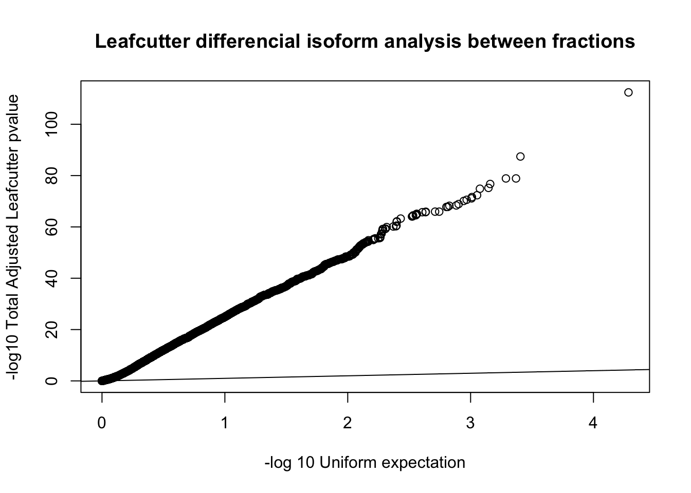

Last updated: 2019-02-14
workflowr checks: (Click a bullet for more information) ✔ R Markdown file: up-to-date
Great! Since the R Markdown file has been committed to the Git repository, you know the exact version of the code that produced these results.
✔ Environment: empty
Great job! The global environment was empty. Objects defined in the global environment can affect the analysis in your R Markdown file in unknown ways. For reproduciblity it’s best to always run the code in an empty environment.
✔ Seed:
set.seed(12345)
The command set.seed(12345) was run prior to running the code in the R Markdown file. Setting a seed ensures that any results that rely on randomness, e.g. subsampling or permutations, are reproducible.
✔ Session information: recorded
Great job! Recording the operating system, R version, and package versions is critical for reproducibility.
✔ Repository version: 73ef57e
wflow_publish or wflow_git_commit). workflowr only checks the R Markdown file, but you know if there are other scripts or data files that it depends on. Below is the status of the Git repository when the results were generated:
Ignored files:
Ignored: .DS_Store
Ignored: .Rhistory
Ignored: .Rproj.user/
Ignored: data/.DS_Store
Ignored: data/perm_QTL_trans_noMP_5percov/
Ignored: output/.DS_Store
Untracked files:
Untracked: KalistoAbundance18486.txt
Untracked: analysis/4suDataIGV.Rmd
Untracked: analysis/DirectionapaQTL.Rmd
Untracked: analysis/EvaleQTLs.Rmd
Untracked: analysis/YL_QTL_test.Rmd
Untracked: analysis/ncbiRefSeq_sm.sort.mRNA.bed
Untracked: analysis/snake.config.notes.Rmd
Untracked: analysis/verifyBAM.Rmd
Untracked: analysis/verifybam_dubs.Rmd
Untracked: code/PeaksToCoverPerReads.py
Untracked: code/strober_pc_pve_heatmap_func.R
Untracked: data/18486.genecov.txt
Untracked: data/APApeaksYL.total.inbrain.bed
Untracked: data/ApaQTLs/
Untracked: data/ChromHmmOverlap/
Untracked: data/DistTXN2Peak_genelocAnno/
Untracked: data/GM12878.chromHMM.bed
Untracked: data/GM12878.chromHMM.txt
Untracked: data/LianoglouLCL/
Untracked: data/LocusZoom/
Untracked: data/NuclearApaQTLs.txt
Untracked: data/PeakCounts/
Untracked: data/PeakCounts_noMP_5perc/
Untracked: data/PeakCounts_noMP_genelocanno/
Untracked: data/PeakUsage/
Untracked: data/PeakUsage_noMP/
Untracked: data/PeakUsage_noMP_GeneLocAnno/
Untracked: data/PeaksUsed/
Untracked: data/PeaksUsed_noMP_5percCov/
Untracked: data/RNAkalisto/
Untracked: data/RefSeq_annotations/
Untracked: data/TotalApaQTLs.txt
Untracked: data/Totalpeaks_filtered_clean.bed
Untracked: data/UnderstandPeaksQC/
Untracked: data/WASP_STAT/
Untracked: data/YL-SP-18486-T-combined-genecov.txt
Untracked: data/YL-SP-18486-T_S9_R1_001-genecov.txt
Untracked: data/YL_QTL_test/
Untracked: data/apaExamp/
Untracked: data/apaQTL_examp_noMP/
Untracked: data/bedgraph_peaks/
Untracked: data/bin200.5.T.nuccov.bed
Untracked: data/bin200.Anuccov.bed
Untracked: data/bin200.nuccov.bed
Untracked: data/clean_peaks/
Untracked: data/comb_map_stats.csv
Untracked: data/comb_map_stats.xlsx
Untracked: data/comb_map_stats_39ind.csv
Untracked: data/combined_reads_mapped_three_prime_seq.csv
Untracked: data/diff_iso_GeneLocAnno/
Untracked: data/diff_iso_proc/
Untracked: data/diff_iso_trans/
Untracked: data/ensemble_to_genename.txt
Untracked: data/example_gene_peakQuant/
Untracked: data/explainProtVar/
Untracked: data/filtPeakOppstrand_cov_noMP_GeneLocAnno_5perc/
Untracked: data/filtered_APApeaks_merged_allchrom_refseqTrans.closest2End.bed
Untracked: data/filtered_APApeaks_merged_allchrom_refseqTrans.closest2End.noties.bed
Untracked: data/first50lines_closest.txt
Untracked: data/gencov.test.csv
Untracked: data/gencov.test.txt
Untracked: data/gencov_zero.test.csv
Untracked: data/gencov_zero.test.txt
Untracked: data/gene_cov/
Untracked: data/joined
Untracked: data/leafcutter/
Untracked: data/merged_combined_YL-SP-threeprimeseq.bg
Untracked: data/molPheno_noMP/
Untracked: data/mol_overlap/
Untracked: data/mol_pheno/
Untracked: data/nom_QTL/
Untracked: data/nom_QTL_opp/
Untracked: data/nom_QTL_trans/
Untracked: data/nuc6up/
Untracked: data/nuc_10up/
Untracked: data/other_qtls/
Untracked: data/pQTL_otherphen/
Untracked: data/peakPerRefSeqGene/
Untracked: data/perm_QTL/
Untracked: data/perm_QTL_GeneLocAnno_noMP_5percov/
Untracked: data/perm_QTL_GeneLocAnno_noMP_5percov_3UTR/
Untracked: data/perm_QTL_opp/
Untracked: data/perm_QTL_trans/
Untracked: data/perm_QTL_trans_filt/
Untracked: data/protAndAPAAndExplmRes.Rda
Untracked: data/protAndAPAlmRes.Rda
Untracked: data/protAndExpressionlmRes.Rda
Untracked: data/reads_mapped_three_prime_seq.csv
Untracked: data/smash.cov.results.bed
Untracked: data/smash.cov.results.csv
Untracked: data/smash.cov.results.txt
Untracked: data/smash_testregion/
Untracked: data/ssFC200.cov.bed
Untracked: data/temp.file1
Untracked: data/temp.file2
Untracked: data/temp.gencov.test.txt
Untracked: data/temp.gencov_zero.test.txt
Untracked: data/threePrimeSeqMetaData.csv
Untracked: data/threePrimeSeqMetaData55Ind.txt
Untracked: data/threePrimeSeqMetaData55Ind.xlsx
Untracked: data/threePrimeSeqMetaData55Ind_noDup.txt
Untracked: data/threePrimeSeqMetaData55Ind_noDup.xlsx
Untracked: data/threePrimeSeqMetaData55Ind_noDup_WASPMAP.txt
Untracked: data/threePrimeSeqMetaData55Ind_noDup_WASPMAP.xlsx
Untracked: output/picard/
Untracked: output/plots/
Untracked: output/qual.fig2.pdf
Unstaged changes:
Modified: analysis/28ind.peak.explore.Rmd
Modified: analysis/CompareLianoglouData.Rmd
Modified: analysis/apaQTLoverlapGWAS.Rmd
Modified: analysis/cleanupdtseq.internalpriming.Rmd
Modified: analysis/coloc_apaQTLs_protQTLs.Rmd
Modified: analysis/dif.iso.usage.leafcutter.Rmd
Modified: analysis/diff_iso_pipeline.Rmd
Modified: analysis/explainpQTLs.Rmd
Modified: analysis/explore.filters.Rmd
Modified: analysis/flash2mash.Rmd
Modified: analysis/mispriming_approach.Rmd
Modified: analysis/overlapMolQTL.Rmd
Modified: analysis/overlapMolQTL.opposite.Rmd
Modified: analysis/overlap_qtls.Rmd
Modified: analysis/peakOverlap_oppstrand.Rmd
Modified: analysis/peakQCPPlots.Rmd
Modified: analysis/pheno.leaf.comb.Rmd
Modified: analysis/pipeline_55Ind.Rmd
Modified: analysis/swarmPlots_QTLs.Rmd
Modified: analysis/test.max2.Rmd
Modified: analysis/understandPeaks.Rmd
Modified: code/Snakefile
| File | Version | Author | Date | Message |
|---|---|---|---|---|
| Rmd | 73ef57e | Briana Mittleman | 2019-02-14 | add fdr cutoff for leafcutter results |
| html | 5d371f7 | Briana Mittleman | 2019-02-13 | Build site. |
| Rmd | 4e0fbe4 | Briana Mittleman | 2019-02-13 | add gene location plot |
| html | f91ab35 | Briana Mittleman | 2019-01-31 | Build site. |
| Rmd | 4541f4c | Briana Mittleman | 2019-01-31 | add correlation plot |
| html | a70015c | Briana Mittleman | 2019-01-31 | Build site. |
| Rmd | f846c50 | Briana Mittleman | 2019-01-31 | add distance plots |
| html | 5c81ca7 | Briana Mittleman | 2019-01-30 | Build site. |
| Rmd | c6310a2 | Briana Mittleman | 2019-01-30 | QTL res |
| html | 35c4e88 | Briana Mittleman | 2019-01-30 | Build site. |
| Rmd | a8a9acb | Briana Mittleman | 2019-01-30 | add explanation for midlevel |
| html | 736a503 | Briana Mittleman | 2019-01-29 | Build site. |
| Rmd | a7f0295 | Briana Mittleman | 2019-01-29 | evaluate top delta PSI |
| html | 26951df | Briana Mittleman | 2019-01-29 | Build site. |
| html | 1def3fb | Briana Mittleman | 2019-01-29 | Build site. |
| Rmd | d194ec2 | Briana Mittleman | 2019-01-29 | lc results |
| html | 2701515 | Briana Mittleman | 2019-01-29 | Build site. |
| Rmd | 956f4a8 | Briana Mittleman | 2019-01-29 | peak usage 5% |
| html | 4e74f81 | Briana Mittleman | 2019-01-28 | Build site. |
| Rmd | e7ed8fc | Briana Mittleman | 2019-01-28 | fix map func |
| html | a97adbc | Briana Mittleman | 2019-01-28 | Build site. |
| Rmd | a2911ff | Briana Mittleman | 2019-01-28 | start analysis for new gene peak assignemnt |
Lin et al: An in-depth map of polyadenylation sites in cancer 2012: -Mapped locations to annotated locations in UCUS browser: “The mapped locations were annotated using the UCSC genome browser tables ( 26 ). When a locus could be attributed to multiple possible annotations, the locus was assigned with a single annotation in the following priority order: 3′ UTRs (sense), coding sequences (CDS, sense), 5′ UTRs (sense), intron (sense), non-coding RNAs (ncRNAs, sense), 5′ UTR antisense, CDS antisense, 3′ UTR antisense, intron antisense, promoter antisense, ncRNA antisense and intergenic”
I want to download this annotation and try this. I am using the ncbi_refseq annotations. I will download regions of the genome seperatly and then merge the files.
5’ UTR
Coding Exon
Intron
3’ UTR
(downstream 5000)-downstream proximal region
I also want a dictionary with the transcripts and the gene names for the annotation. This information will come from the Transcript2GeneName file. In this file the transcript ID is in column1 and the gene name column 13.
I have downloaded all of the these to data/RefSeq_annotations. I will concatinate all of these for a full annotation dataset, I will then sort this file. The file is ncbiRefSeq_allAnnotation.sort.bed
Using this I can create an annotation in a bed file I can use for the overlap with my peaks. This will include getting the transcript to gene annotations. I will transfer the files to midway in my genome annotation directory and work with them there.
Format full refseq annotation:
TXN2Gene_file="/project2/gilad/briana/genome_anotation_data/RefSeq_annotations/Transcript2GeneName.dms"
gene_dic={}
for ln in open(TXN2Gene_file,"r"):
txn=ln.split()[1]
gene=ln.split()[12]
gene_dic[txn]=gene
outF=open("/project2/gilad/briana/genome_anotation_data/RefSeq_annotations/ncbiRefSeq_FormatedallAnnotation.sort.bed","w")
inFile="/project2/gilad/briana/genome_anotation_data/RefSeq_annotations/ncbiRefSeq_allAnnotation.sort.bed"
for ln in open(inFile, "r"):
chrom, start, end, name, score, strand = ln.split()
chrom_fix=chrom[3:]
txn=name.split("_")[:2]
txnF="_".join(txn)
gene=gene_dic[txnF]
type=name.split("_")[2]
id=type + ":" + gene
outF.write("%s\t%s\t%s\t%s\t%s\t%s\n"%(chrom_fix, start, end, id, score, strand))
outF.close()I want to create a file with my peaks mapped to these regions. I will include a structure for when there is a tie and put intergenic if it is not found. I need to do an intersect that gives me all of the IDs. After this I can use python to parse the hiarchy.
I can use bedtools map for this. I want all of the data to come back.
-c 4 -o distinct
-S opposite strand
I will do this on the peaks before I looked at usage.
mapnoMPPeaks2GenomeLoc.sh
#!/bin/bash
#SBATCH --job-name=mapnoMPPeaks2GenomeLoc
#SBATCH --account=pi-yangili1
#SBATCH --time=24:00:00
#SBATCH --output=mapnoMPPeaks2GenomeLoc.out
#SBATCH --error=mapnoMPPeaks2GenomeLoc.err
#SBATCH --partition=broadwl
#SBATCH --mem=12G
#SBATCH --mail-type=END
module load Anaconda3
source activate three-prime-env
#annotation: /project2/gilad/briana/genome_anotation_data/RefSeq_annotations/ncbiRefSeq_FormatedallAnnotation.sort.bed
#peaks: /project2/gilad/briana/threeprimeseq/data/mergedPeaks_noMP_filtered/Filtered_APApeaks_merged_allchrom_noMP.sort.named.noCHR.bed
bedtools map -a /project2/gilad/briana/threeprimeseq/data/mergedPeaks_noMP_filtered/Filtered_APApeaks_merged_allchrom_noMP.sort.named.noCHR.bed -b /project2/gilad/briana/genome_anotation_data/RefSeq_annotations/ncbiRefSeq_FormatedallAnnotation.sort.bed -c 4 -S -o distinct > /project2/gilad/briana/threeprimeseq/data/mergedPeaks_noMP_GeneLoc/Filtered_APApeaks_merged_allchrom_noMP.sort.named.noCHR_geneLoc.bed
Look at how many get no annotation. I can do this interactively in python.
num=0
for ln in open("/project2/gilad/briana/threeprimeseq/data/mergedPeaks_noMP_GeneLoc/Filtered_APApeaks_merged_allchrom_noMP.sort.named.noCHR_geneLoc.bed", "r"):
location=ln.split()[7]
if location==".":
num +=1
print(num)This shows me that 85% of the peaks fall into one of these annotations.
Now I need to sort out the peaks with multiple annotations.
5’ UTR
Coding Exon
Intron
3’ UTR
(downstream 5000)-downstream proximal region
I can write this out as the SAF I need. GeneID (peak1:1:14404:14484:-:OR4F16) Chr Start End Strand. For this I cannot include the peaks with no gene association. I can go back to this if i need to in the future.
processGenLocPeakAnno2SAF.py
inFile="/project2/gilad/briana/threeprimeseq/data/mergedPeaks_noMP_GeneLoc/Filtered_APApeaks_merged_allchrom_noMP.sort.named.noCHR_geneLoc.bed"
outFile=open("/project2/gilad/briana/threeprimeseq/data/mergedPeaks_noMP_GeneLoc/Filtered_APApeaks_merged_allchrom_noMP.sort.named.noCHR_geneLocParsed.SAF" , "w")
outFile.write("GeneID\tChr\tStart\tEnd\tStrand\n")
for ln in open(inFile, "r"):
chrom, start, end, peak, cov, strand, score, anno = ln.split()
if anno==".":
continue
anno_lst=anno.split(",")
if len(anno_lst)==1:
gene=anno_lst[0].split(":")[1]
print("1 gene")
peak_i=int(peak)
start_i=int(start)
end_i=int(end)
ID="peak%d:%s:%d:%d:%s:%s"%(peak_i, chrom, start_i, end_i, strand, gene)
outFile.write("%s\t%s\t%d\t%d\t%s\n"%(ID, chrom, start_i, end_i, strand))
else:
type_dic={}
for each in anno_lst:
type_dic[each.split(":")[0]]=each.split(":")[1]
if "utr3" in type_dic.keys():
gene=type_dic["utr3"]
peak_i=int(peak)
start_i=int(start)
end_i=int(end)
ID="peak%d:%s:%d:%d:%s:%s"%(peak_i, chrom, start_i, end_i, strand, gene)
outFile.write("%s\t%s\t%d\t%d\t%s\n"%(ID, chrom, start_i, end_i, strand))
elif "end" in type_dic.keys():
gene=type_dic["end"]
peak_i=int(peak)
start_i=int(start)
end_i=int(end)
ID="peak%d:%s:%d:%d:%s:%s"%(peak_i, chrom, start_i, end_i, strand, gene)
outFile.write("%s\t%s\t%d\t%d\t%s\n"%(ID, chrom, start_i, end_i, strand))
elif "cds" in type_dic.keys():
gene=type_dic["cds"]
peak_i=int(peak)
start_i=int(start)
end_i=int(end)
ID="peak%d:%s:%d:%d:%s:%s"%(peak_i, chrom, start_i, end_i, strand, gene)
outFile.write("%s\t%s\t%d\t%d\t%s\n"%(ID, chrom, start_i, end_i, strand))
elif "utr5" in type_dic.keys():
gene=type_dic["utr5"]
peak_i=int(peak)
start_i=int(start)
end_i=int(end)
ID="peak%d:%s:%d:%d:%s:%s"%(peak_i, chrom, start_i, end_i, strand, gene)
outFile.write("%s\t%s\t%d\t%d\t%s\n"%(ID, chrom, start_i, end_i, strand))
elif "intron" in type_dic.keys():
gene=type_dic["intron"]
peak_i=int(peak)
start_i=int(start)
end_i=int(end)
ID="peak%d:%s:%d:%d:%s:%s"%(peak_i, chrom, start_i, end_i, strand, gene)
outFile.write("%s\t%s\t%d\t%d\t%s\n"%(ID, chrom, start_i, end_i, strand))
outFile.close()This has all of the peaks with at least one gene annotation. (104555) I can run feature counts on this to start getting the usage.
GeneLocAnno_fc_TN_noMP.sh
Because I mapped the genes opposite. The reads are now on in the same direction as the peaks
#!/bin/bash
#SBATCH --job-name=GeneLocAnno_fc_TN_noMP
#SBATCH --account=pi-yangili1
#SBATCH --time=24:00:00
#SBATCH --output=GeneLocAnno_fc_TN_noMP.out
#SBATCH --error=GeneLocAnno_fc_TN_noMP.err
#SBATCH --partition=broadwl
#SBATCH --mem=12G
#SBATCH --mail-type=END
module load Anaconda3
source activate three-prime-env
featureCounts -O -a /project2/gilad/briana/threeprimeseq/data/mergedPeaks_noMP_GeneLoc/Filtered_APApeaks_merged_allchrom_noMP.sort.named.noCHR_geneLocParsed.SAF -F SAF -o /project2/gilad/briana/threeprimeseq/data/filtPeakOppstrand_cov_noMP_GeneLocAnno/filtered_APApeaks_merged_allchrom_refseqGenes.GeneLocAnno_NoMP_sm_quant.Total.fc /project2/gilad/briana/threeprimeseq/data/bam_NoMP_sort/*T-combined-sort.noMP.sort.bam -s 1
featureCounts -O -a /project2/gilad/briana/threeprimeseq/data/mergedPeaks_noMP_GeneLoc/Filtered_APApeaks_merged_allchrom_noMP.sort.named.noCHR_geneLocParsed.SAF -F SAF -o /project2/gilad/briana/threeprimeseq/data/filtPeakOppstrand_cov_noMP_GeneLocAnno/filtered_APApeaks_merged_allchrom_refseqGenes.GeneLocAnno_NoMP_sm_quant.Nuclear.fc /project2/gilad/briana/threeprimeseq/data/bam_NoMP_sort/*N-combined-sort.noMP.sort.bam -s 1Around 4 mill mapping in nuclear and 7 mill in total.
fix_head_fc_geneLoc_tot_noMP.py
infile= open("/project2/gilad/briana/threeprimeseq/data/filtPeakOppstrand_cov_noMP_GeneLocAnno/filtered_APApeaks_merged_allchrom_refseqGenes.GeneLocAnno_NoMP_sm_quant.Total.fc", "r")
fout = open("/project2/gilad/briana/threeprimeseq/data/filtPeakOppstrand_cov_noMP_GeneLocAnno/filtered_APApeaks_merged_allchrom_refseqGenes.GeneLocAnno_NoMP_sm_quant.Total.fixed.fc",'w')
for line, i in enumerate(infile):
if line == 1:
i_list=i.split()
libraries=i_list[:6]
for sample in i_list[6:]:
full = sample.split("/")[7]
samp= full.split("-")[2:4]
lim="_"
samp_st=lim.join(samp)
libraries.append(samp_st)
first_line= "\t".join(libraries)
fout.write(first_line + '\n')
else :
fout.write(i)
fout.close()fix_head_fc_geneLoc_nuc_noMP.py
infile= open("/project2/gilad/briana/threeprimeseq/data/filtPeakOppstrand_cov_noMP_GeneLocAnno/filtered_APApeaks_merged_allchrom_refseqGenes.GeneLocAnno_NoMP_sm_quant.Nuclear.fc", "r")
fout = open("/project2/gilad/briana/threeprimeseq/data/filtPeakOppstrand_cov_noMP_GeneLocAnno/filtered_APApeaks_merged_allchrom_refseqGenes.GeneLocAnno_NoMP_sm_quant.Nuclear.fixed.fc",'w')
for line, i in enumerate(infile):
if line == 1:
i_list=i.split()
libraries=i_list[:6]
for sample in i_list[6:]:
full = sample.split("/")[7]
samp= full.split("-")[2:4]
lim="_"
samp_st=lim.join(samp)
libraries.append(samp_st)
first_line= "\t".join(libraries)
fout.write(first_line + '\n')
else :
fout.write(i)
fout.close()
I can use the fileIDs
/project2/gilad/briana/threeprimeseq/data/filtPeakOppstrand_cov_noMP/file_id_mapping_nuclear_Transcript.txt and /project2/gilad/briana/threeprimeseq/data/filtPeakOppstrand_cov_noMP/file_id_mapping_total_Transcript.txt
I need to make a file with the gene start and ends because I use these in the phenotypes for QTL mapping. I can do this with the project2/gilad/briana/genome_anotation_data/RefSeq_annotations/Transcript2GeneName.dms file. I want the file to look like chr,start,end,txn:gene,.,strand I will sue the start and end of the coding seq
getGeneEnds.py
TXN2Gene_file=open("/project2/gilad/briana/genome_anotation_data/RefSeq_annotations/Transcript2GeneName.dms","r")
outFile=open("/project2/gilad/briana/genome_anotation_data/RefSeq_annotations/ncbiRefSeq_endAllGenes.bed", "w")
for i, ln in enumerate(TXN2Gene_file):
if i >0 :
chrom=ln.split()[2]
chromf=chrom[3:]
start=int(ln.split()[6])
end=int(ln.split()[7])
txn=ln.split()[1]
genename=ln.split()[12]
id=txn + ":" + genename
strand=ln.split()[3]
score="."
outFile.write("%s\t%s\t%s\t%s\t%s\t%s\n"%(chromf, start, end, id, score, strand))
outFile.close()Sort the bed file:
sort -k1,1 -k2,2n /project2/gilad/briana/genome_anotation_data/RefSeq_annotations/ncbiRefSeq_endAllGenes.bed > /project2/gilad/briana/genome_anotation_data/RefSeq_annotations/ncbiRefSeq_endAllGenes.sort.bedmakePhenoRefSeqPeaks_GeneLoc_Total_noMP.py
#PYTHON 3
dic_IND = {}
dic_BAM = {}
for ln in open("/project2/gilad/briana/threeprimeseq/data/filtPeakOppstrand_cov_noMP/file_id_mapping_total_Transcript.txt"):
bam, IND = ln.split("\t")
IND = IND.strip()
dic_IND[bam] = IND
if IND not in dic_BAM:
dic_BAM[IND] = []
dic_BAM[IND].append(bam)
#now I have ind dic with keys as the bam and ind as the values
#I also have a bam dic with ind as the keys and bam as the values
inds=list(dic_BAM.keys()) #list of ind libraries
#gene start and end dictionaries:
dic_geneS = {}
dic_geneE = {}
for ln in open("/project2/gilad/briana/genome_anotation_data/RefSeq_annotations/ncbiRefSeq_endAllGenes.sort.bed"):
chrom, start, end, geneID, score, strand = ln.split('\t')
gene= geneID.split(":")[1]
# if "-" in gene:
# gene=gene.split("-")[0]
if gene not in dic_geneS:
dic_geneS[gene]=int(start)
dic_geneE[gene]=int(end)
#list of genes
count_file=open("/project2/gilad/briana/threeprimeseq/data/filtPeakOppstrand_cov_noMP_GeneLocAnno/filtered_APApeaks_merged_allchrom_refseqGenes.GeneLocAnno_NoMP_sm_quant.Total.fixed.fc", "r")
genes=[]
for line , i in enumerate(count_file):
if line > 1:
i_list=i.split()
id=i_list[0]
id_list=id.split(":")
gene=id_list[5]
if gene not in genes:
genes.append(gene)
#make the ind and gene dic
dic_dub={}
for g in genes:
dic_dub[g]={}
for i in inds:
dic_dub[g][i]=0
#populate the dictionary
count_file=open("/project2/gilad/briana/threeprimeseq/data/filtPeakOppstrand_cov_noMP_GeneLocAnno/filtered_APApeaks_merged_allchrom_refseqGenes.GeneLocAnno_NoMP_sm_quant.Total.fixed.fc", "r")
for line, i in enumerate(count_file):
if line > 1:
i_list=i.split()
id=i_list[0]
id_list=id.split(":")
g= id_list[5]
values=list(i_list[6:])
list_list=[]
for ind,val in zip(inds, values):
list_list.append([ind, val])
for num, name in enumerate(list_list):
dic_dub[g][list_list[num][0]] += int(list_list[num][1])
#write the file by acessing the dictionary and putting values in the table ver the value in the dic
fout=open("/project2/gilad/briana/threeprimeseq/data/phenotypes_filtPeakTranscript_noMP_GeneLocAnno/filtered_APApeaks_merged_allchrom_refseqGenes.GeneLocAnno_NoMP_sm_quant.Total.fixed.pheno.fc","w")
peak=["chrom"]
inds_noL=[]
for each in inds:
indsNA= "NA" + each[:-2]
inds_noL.append(indsNA)
fout.write(" ".join(peak + inds_noL) + '\n' )
count_file=open("/project2/gilad/briana/threeprimeseq/data/filtPeakOppstrand_cov_noMP_GeneLocAnno/filtered_APApeaks_merged_allchrom_refseqGenes.GeneLocAnno_NoMP_sm_quant.Total.fixed.fc", "r")
for line , i in enumerate(count_file):
if line > 1:
i_list=i.split()
id=i_list[0]
id_list=id.split(":")
gene=id_list[5]
start=dic_geneS[id_list[5]]
end=dic_geneE[id_list[5]]
buff=[]
buff.append("chr%s:%d:%d:%s_%s_%s"%(id_list[1], start, end, id_list[5], id_list[4], id_list[0]))
for x,y in zip(i_list[6:], inds):
b=int(dic_dub[gene][y])
t=int(x)
buff.append("%d/%d"%(t,b))
fout.write(" ".join(buff)+ '\n')
fout.close()makePhenoRefSeqPeaks_GeneLoc_Nuclear_noMP.py
#PYTHON 3
dic_IND = {}
dic_BAM = {}
for ln in open("/project2/gilad/briana/threeprimeseq/data/filtPeakOppstrand_cov_noMP/file_id_mapping_nuclear_Transcript.txt"):
bam, IND = ln.split("\t")
IND = IND.strip()
dic_IND[bam] = IND
if IND not in dic_BAM:
dic_BAM[IND] = []
dic_BAM[IND].append(bam)
#now I have ind dic with keys as the bam and ind as the values
#I also have a bam dic with ind as the keys and bam as the values
inds=list(dic_BAM.keys()) #list of ind libraries
#gene start and end dictionaries:
dic_geneS = {}
dic_geneE = {}
for ln in open("/project2/gilad/briana/genome_anotation_data/RefSeq_annotations/ncbiRefSeq_endAllGenes.sort.bed"):
chrom, start, end, geneID, score, strand = ln.split('\t')
gene= geneID.split(":")[1]
#if "-" in gene:
# gene=gene.split("-")[0]
if gene not in dic_geneS:
dic_geneS[gene]=int(start)
dic_geneE[gene]=int(end)
#list of genes
count_file=open("/project2/gilad/briana/threeprimeseq/data/filtPeakOppstrand_cov_noMP_GeneLocAnno/filtered_APApeaks_merged_allchrom_refseqGenes.GeneLocAnno_NoMP_sm_quant.Nuclear.fixed.fc", "r")
genes=[]
for line , i in enumerate(count_file):
if line > 1:
i_list=i.split()
id=i_list[0]
id_list=id.split(":")
gene=id_list[5]
if gene not in genes:
genes.append(gene)
#make the ind and gene dic
dic_dub={}
for g in genes:
dic_dub[g]={}
for i in inds:
dic_dub[g][i]=0
#populate the dictionary
count_file=open("/project2/gilad/briana/threeprimeseq/data/filtPeakOppstrand_cov_noMP_GeneLocAnno/filtered_APApeaks_merged_allchrom_refseqGenes.GeneLocAnno_NoMP_sm_quant.Nuclear.fixed.fc", "r")
for line, i in enumerate(count_file):
if line > 1:
i_list=i.split()
id=i_list[0]
id_list=id.split(":")
g= id_list[5]
values=list(i_list[6:])
list_list=[]
for ind,val in zip(inds, values):
list_list.append([ind, val])
for num, name in enumerate(list_list):
dic_dub[g][list_list[num][0]] += int(list_list[num][1])
#write the file by acessing the dictionary and putting values in the table ver the value in the dic
fout=open("/project2/gilad/briana/threeprimeseq/data/phenotypes_filtPeakTranscript_noMP_GeneLocAnno/filtered_APApeaks_merged_allchrom_refseqGenes.GeneLocAnno_NoMP_sm_quant.Nuclear.fixed.pheno.fc","w")
peak=["chrom"]
inds_noL=[]
for each in inds:
indsNA= "NA" + each[:-2]
inds_noL.append(indsNA)
fout.write(" ".join(peak + inds_noL) + '\n' )
count_file=open("/project2/gilad/briana/threeprimeseq/data/filtPeakOppstrand_cov_noMP_GeneLocAnno/filtered_APApeaks_merged_allchrom_refseqGenes.GeneLocAnno_NoMP_sm_quant.Nuclear.fixed.fc", "r")
for line , i in enumerate(count_file):
if line > 1:
i_list=i.split()
id=i_list[0]
id_list=id.split(":")
gene=id_list[5]
start=dic_geneS[id_list[5]]
end=dic_geneE[id_list[5]]
buff=[]
buff.append("chr%s:%d:%d:%s_%s_%s"%(id_list[1], start, end, id_list[5], id_list[4], id_list[0]))
for x,y in zip(i_list[6:], inds):
b=int(dic_dub[gene][y])
t=int(x)
buff.append("%d/%d"%(t,b))
fout.write(" ".join(buff)+ '\n')
fout.close()Run make pheno files:
run_makePhen_sep_GeneLocAnno_noMP.sh
#!/bin/bash
#SBATCH --job-name=run_makePhen_sep_GeneLocAnno_noMP
#SBATCH --account=pi-yangili1
#SBATCH --time=24:00:00
#SBATCH --output=run_makePhen_sep_GeneLocAnno_noMP.out
#SBATCH --error=run_makePhen_sep_GeneLocAnno_noMP.err
#SBATCH --partition=broadwl
#SBATCH --mem=12G
#SBATCH --mail-type=END
module load Anaconda3
source activate three-prime-env
python makePhenoRefSeqPeaks_GeneLoc_Total_noMP.py
python makePhenoRefSeqPeaks_GeneLoc_Nuclear_noMP.py
pheno2CountOnly_genelocAnno.R
library(reshape2)
library(tidyverse)
totalPeakUs=read.table("/project2/gilad/briana/threeprimeseq/data/phenotypes_filtPeakTranscript_noMP_GeneLocAnno/filtered_APApeaks_merged_allchrom_refseqGenes.GeneLocAnno_NoMP_sm_quant.Total.fixed.pheno.fc", header = T, stringsAsFactors = F) %>% separate(chrom, sep = ":", into = c("chr", "start", "end", "id")) %>% separate(id, sep="_", into=c("gene", "strand", "peak"))
nuclearPeakUs=read.table("/project2/gilad/briana/threeprimeseq/data/phenotypes_filtPeakTranscript_noMP_GeneLocAnno/filtered_APApeaks_merged_allchrom_refseqGenes.GeneLocAnno_NoMP_sm_quant.Nuclear.fixed.pheno.fc", header = T, stringsAsFactors = F) %>% separate(chrom, sep = ":", into = c("chr", "start", "end", "id")) %>% separate(id, sep="_", into=c("gene", "strand", "peak"))
write.table(totalPeakUs[,7:dim(totalPeakUs)[2]], file="/project2/gilad/briana/threeprimeseq/data/phenotypes_filtPeakTranscript_noMP_GeneLocAnno/filtered_APApeaks_merged_allchrom_refseqGenes.GeneLocAnno_NoMP_sm_quant.Total.fixed.pheno.CountsOnly",quote=FALSE, col.names = F, row.names = F)
write.table(nuclearPeakUs[,7:dim(nuclearPeakUs)[2]], file="/project2/gilad/briana/threeprimeseq/data/phenotypes_filtPeakTranscript_noMP_GeneLocAnno/filtered_APApeaks_merged_allchrom_refseqGenes.GeneLocAnno_NoMP_sm_quant.Nuclear.fixed.pheno.CountsOnly",quote=FALSE, col.names = F, row.names = F)convertCount2Numeric_noMP_GeneLocAnno.py
def convert(infile, outfile):
final=open(outfile, "w")
for ln in open(infile, "r"):
line_list=ln.split()
new_list=[]
for i in line_list:
num, dem = i.split("/")
if dem == "0":
perc = "0.00"
else:
perc = int(num)/int(dem)
perc=round(perc,2)
perc= str(perc)
new_list.append(perc)
final.write("\t".join(new_list)+ '\n')
final.close()
convert("/project2/gilad/briana/threeprimeseq/data/phenotypes_filtPeakTranscript_noMP_GeneLocAnno/filtered_APApeaks_merged_allchrom_refseqGenes.GeneLocAnno_NoMP_sm_quant.Total.fixed.pheno.CountsOnly","/project2/gilad/briana/threeprimeseq/data/phenotypes_filtPeakTranscript_noMP_GeneLocAnno/filtered_APApeaks_merged_allchrom_refseqGenes.GeneLocAnno_NoMP_sm_quant.Total.fixed.pheno.CountsOnlyNumeric.txt")
convert("/project2/gilad/briana/threeprimeseq/data/phenotypes_filtPeakTranscript_noMP_GeneLocAnno/filtered_APApeaks_merged_allchrom_refseqGenes.GeneLocAnno_NoMP_sm_quant.Nuclear.fixed.pheno.CountsOnly","/project2/gilad/briana/threeprimeseq/data/phenotypes_filtPeakTranscript_noMP_GeneLocAnno/filtered_APApeaks_merged_allchrom_refseqGenes.GeneLocAnno_NoMP_sm_quant.Nuclear.fixed.pheno.CountsOnlyNumeric.txt")
Pull these into R here so I can filter peaks with 5% and understand how many per gene.
library(workflowr)This is workflowr version 1.1.1
Run ?workflowr for help getting startedlibrary(tidyverse)── Attaching packages ───────────────────────────────────────────────────────────── tidyverse 1.2.1 ──✔ ggplot2 3.0.0 ✔ purrr 0.2.5
✔ tibble 1.4.2 ✔ dplyr 0.7.6
✔ tidyr 0.8.1 ✔ stringr 1.3.1
✔ readr 1.1.1 ✔ forcats 0.3.0── Conflicts ──────────────────────────────────────────────────────────────── tidyverse_conflicts() ──
✖ dplyr::filter() masks stats::filter()
✖ dplyr::lag() masks stats::lag()library(reshape2)
Attaching package: 'reshape2'The following object is masked from 'package:tidyr':
smithslibrary(cowplot)
Attaching package: 'cowplot'The following object is masked from 'package:ggplot2':
ggsavelibrary(ggpubr)Loading required package: magrittr
Attaching package: 'magrittr'The following object is masked from 'package:purrr':
set_namesThe following object is masked from 'package:tidyr':
extract
Attaching package: 'ggpubr'The following object is masked from 'package:cowplot':
get_legendtotalPeakUs=read.table("../data/PeakUsage_noMP_GeneLocAnno/filtered_APApeaks_merged_allchrom_refseqGenes.GeneLocAnno_NoMP_sm_quant.Total.fixed.pheno.fc", header = T, stringsAsFactors = F) %>% separate(chrom, sep = ":", into = c("chr", "start", "end", "id")) %>% separate(id, sep="_", into=c("gene", "strand", "peak"))Warning: Expected 3 pieces. Additional pieces discarded in 4 rows [13402,
13403, 13404, 101569].nuclearPeakUs=read.table("../data/PeakUsage_noMP_GeneLocAnno/filtered_APApeaks_merged_allchrom_refseqGenes.GeneLocAnno_NoMP_sm_quant.Nuclear.fixed.pheno.fc", header = T, stringsAsFactors = F) %>% separate(chrom, sep = ":", into = c("chr", "start", "end", "id")) %>% separate(id, sep="_", into=c("gene", "strand", "peak"))Warning: Expected 3 pieces. Additional pieces discarded in 4 rows [13402,
13403, 13404, 101569].ind=colnames(totalPeakUs)[7:dim(totalPeakUs)[2]]
totalPeakUs_CountNum=read.table("../data/PeakUsage_noMP_GeneLocAnno/filtered_APApeaks_merged_allchrom_refseqGenes.GeneLocAnno_NoMP_sm_quant.Total.fixed.pheno.CountsOnlyNumeric.txt", col.names = ind)
nuclearPeakUs_CountNum=read.table("../data/PeakUsage_noMP_GeneLocAnno/filtered_APApeaks_merged_allchrom_refseqGenes.GeneLocAnno_NoMP_sm_quant.Nuclear.fixed.pheno.CountsOnlyNumeric.txt", col.names = ind)#numeric with anno
totalPeak=as.data.frame(cbind(totalPeakUs[,1:6], totalPeakUs_CountNum))
nuclearPeak=as.data.frame(cbind(nuclearPeakUs[,1:6], nuclearPeakUs_CountNum))
#mean
totalPeakUs_CountNum_mean=rowMeans(totalPeakUs_CountNum)
nuclearPeakUs_CountNum_mean=rowMeans(nuclearPeakUs_CountNum)
#append mean to anno
TotalPeakUSMean=as.data.frame(cbind(totalPeakUs[,1:6],totalPeakUs_CountNum_mean))
NuclearPeakUSMean=as.data.frame(cbind(nuclearPeakUs[,1:6],nuclearPeakUs_CountNum_mean))Filter on the mean
TotalPeakUSMean_filt=TotalPeakUSMean %>% filter(totalPeakUs_CountNum_mean>=.05) %>% group_by(gene) %>% summarise(Npeaks=n())
totalPeaksPerGene=TotalPeakUSMean_filt %>% group_by(Npeaks) %>% summarise(GenesWithNPeaks=n())
NuclearPeakUSMean_filt=NuclearPeakUSMean %>% filter(nuclearPeakUs_CountNum_mean>=.05) %>% group_by(gene) %>% summarise(Npeaks=n())
nuclearPeaksPerGene=NuclearPeakUSMean_filt %>% group_by(Npeaks) %>% summarise(GenesWithNPeaks=n())
nuclearPeaksPerGene$GenesWithNPeaks=as.integer(nuclearPeaksPerGene$GenesWithNPeaks)Peak num level
nPeaksBoth=totalPeaksPerGene %>% full_join(nuclearPeaksPerGene, by="Npeaks")
colnames(nPeaksBoth)= c("Peaks", "Total", "Nuclear")
nPeaksBoth$Total= nPeaksBoth$Total %>% replace_na(0)
#melt nPeaksBoth
nPeaksBoth_melt=melt(nPeaksBoth, id.var="Peaks")
colnames(nPeaksBoth_melt)= c("Peaks", "Fraction", "Genes")
#plot
peakUsage5perc=ggplot(nPeaksBoth_melt, aes(x=Peaks, y=Genes, fill=Fraction)) + geom_bar(stat="identity", position = "dodge") + labs(title="Number of Genes with >5% Peak Usage \n cleaned for mispriming") + theme(axis.text.y = element_text(size=12),axis.title.y=element_text(size=10,face="bold"), axis.title.x=element_text(size=12,face="bold"))+ scale_fill_manual(values=c("darkviolet","deepskyblue3")) + facet_grid(~Fraction)
peakUsage5perc| Version | Author | Date |
|---|---|---|
| 2701515 | Briana Mittleman | 2019-01-29 |
This is a similar distribution to the other annotations.
Save this plot:
ggsave(peakUsage5perc, file="../output/plots/QC_plots/peakUsage5perc_noMP_geneLocAnno.png")Saving 7 x 5 in imageGenes covered with these annoations.
#nuclear
nrow(NuclearPeakUSMean_filt) [1] 14851#total
nrow(TotalPeakUSMean_filt) [1] 14852There are more genes in this. We expect this because i have included LINCs.
Look at number of peaks in each set.
#nuclear
NuclearPeakUSMean %>% filter(nuclearPeakUs_CountNum_mean>=.05) %>% nrow()[1] 37370#total
TotalPeakUSMean %>% filter(totalPeakUs_CountNum_mean>=.05) %>% nrow()[1] 33002There are a few less peaks. This is expected give we cut 15% of the peaks because they are not within 5kb of an annotated gene.
Write out these peaks
NuclearPeakUSMean_5perc=NuclearPeakUSMean %>% filter(nuclearPeakUs_CountNum_mean>=.05)
write.table(NuclearPeakUSMean_5perc,file="../data/PeakUsage_noMP_GeneLocAnno/filtered_APApeaks_merged_allchrom_refseqGenes.GeneLocAnno.NoMP_sm_quant.Nuclear_fixed.pheno.5percPeaks.txt", row.names=F, col.names=F, quote = F)
TotalPeakUSMean_5per= TotalPeakUSMean %>% filter(totalPeakUs_CountNum_mean>=.05)
write.table(TotalPeakUSMean_5per,file="../data/PeakUsage_noMP_GeneLocAnno/filtered_APApeaks_merged_allchrom_refseqGenes.GeneLocAnno.NoMP_sm_quant.Total_fixed.pheno.5percPeaks.txt", row.names=F, col.names=F, quote = F)I want to filter these peaks so I can rerun the leafcutter analysis and look at some of the results. I transfered these to /project2/gilad/briana/threeprimeseq/data/phenotypes_filtPeakTranscript_noMP_GeneLocAnno/.
filterPheno_bothFraction_GeneLocAnno_5perc.py
#python
totalokPeaks5perc_file="/project2/gilad/briana/threeprimeseq/data/phenotypes_filtPeakTranscript_noMP_GeneLocAnno/filtered_APApeaks_merged_allchrom_refseqGenes.GeneLocAnno.NoMP_sm_quant.Total_fixed.pheno.5percPeaks.txt"
totalokPeaks5perc={}
for ln in open(totalokPeaks5perc_file,"r"):
peakname=ln.split()[5]
totalokPeaks5perc[peakname]=""
nuclearokPeaks5perc_file="/project2/gilad/briana/threeprimeseq/data/phenotypes_filtPeakTranscript_noMP_GeneLocAnno/filtered_APApeaks_merged_allchrom_refseqGenes.GeneLocAnno.NoMP_sm_quant.Nuclear_fixed.pheno.5percPeaks.txt"
nuclearokPeaks5perc={}
for ln in open(nuclearokPeaks5perc_file,"r"):
peakname=ln.split()[5]
nuclearokPeaks5perc[peakname]=""
totalPhenoBefore=open("/project2/gilad/briana/threeprimeseq/data/phenotypes_filtPeakTranscript_noMP_GeneLocAnno/filtered_APApeaks_merged_allchrom_refseqGenes.GeneLocAnno_NoMP_sm_quant.Total.fixed.pheno.fc","r")
totalPhenoAfter=open("/project2/gilad/briana/threeprimeseq/data/phenotypes_filtPeakTranscript_noMP_GeneLocAnno_5percUs/filtered_APApeaks_merged_allchrom_refseqGenes.GeneLocAnno_NoMP_sm_quant.Total.fixed.pheno_5perc.fc", "w")
for num, ln in enumerate(totalPhenoBefore):
if num ==0:
totalPhenoAfter.write(ln)
else:
id=ln.split()[0].split(":")[3].split("_")[2]
if id in totalokPeaks5perc.keys():
totalPhenoAfter.write(ln)
totalPhenoAfter.close()
nuclearPhenoBefore=open("/project2/gilad/briana/threeprimeseq/data/phenotypes_filtPeakTranscript_noMP_GeneLocAnno/filtered_APApeaks_merged_allchrom_refseqGenes.GeneLocAnno_NoMP_sm_quant.Nuclear.fixed.pheno.fc","r")
nuclearPhenoAfter=open("/project2/gilad/briana/threeprimeseq/data/phenotypes_filtPeakTranscript_noMP_GeneLocAnno_5percUs/filtered_APApeaks_merged_allchrom_refseqGenes.GeneLocAnno_NoMP_sm_quant.Nuclear.fixed.pheno_5perc.fc", "w")
for num, ln in enumerate(nuclearPhenoBefore):
if num ==0:
nuclearPhenoAfter.write(ln)
else:
id=ln.split()[0].split(":")[3].split("_")[2]
if id in nuclearokPeaks5perc.keys():
nuclearPhenoAfter.write(ln)
nuclearPhenoAfter.close() Now I can use these peaks to get counts for leafcutter.
I want a file that will have the peaks from total or nuclear.
I am starting here with the SAF file
filternamePeaks5percCov_GeneLocAnno.py
assignedPeaks=open("/project2/gilad/briana/threeprimeseq/data/mergedPeaks_noMP_GeneLoc/Filtered_APApeaks_merged_allchrom_noMP.sort.named.noCHR_geneLocParsed.SAF","r")
outFile=open("/project2/gilad/briana/threeprimeseq/data/mergedPeaks_noMP_GeneLoc/Filtered_APApeaks_merged_allchrom_noMP.sort.named.noCHR_geneLocParsed.5percCov.SAF", "w")
totalokPeaks5perc_file="/project2/gilad/briana/threeprimeseq/data/phenotypes_filtPeakTranscript_noMP_GeneLocAnno/filtered_APApeaks_merged_allchrom_refseqGenes.GeneLocAnno.NoMP_sm_quant.Total_fixed.pheno.5percPeaks.txt"
nuclearokPeaks5perc_file="/project2/gilad/briana/threeprimeseq/data/phenotypes_filtPeakTranscript_noMP_GeneLocAnno/filtered_APApeaks_merged_allchrom_refseqGenes.GeneLocAnno.NoMP_sm_quant.Nuclear_fixed.pheno.5percPeaks.txt"
allPeakOk={}
for ln in open(nuclearokPeaks5perc_file,"r"):
peakname=ln.split()[5]
peaknum=peakname[4:]
allPeakOk[peaknum]=""
for ln in open(totalokPeaks5perc_file,"r"):
peakname=ln.split()[5]
peaknum=peakname[4:]
if peaknum not in allPeakOk.keys():
allPeakOk[peaknum]=""
for i, ln in enumerate(assignedPeaks):
if i == 0:
outFile.write(ln)
else:
ID=ln.split()[0]
peak=ID.split(":")[0]
peak_num=peak[4:]
if peak_num in allPeakOk.keys():
outFile.write(ln)
outFile.close()
Now I will run feature counts, remembering that i want to look at the same strand as the peaks.
bothFrac_processed_GeneLocAnno_FC.sh
#!/bin/bash
#SBATCH --job-name=bothFrac_processed_GeneLocAnno_FC
#SBATCH --account=pi-yangili1
#SBATCH --time=24:00:00
#SBATCH --output=bothFrac_processed_GeneLocAnno_FC.out
#SBATCH --error=bothFrac_processed_GeneLocAnno_FC.err
#SBATCH --partition=broadwl
#SBATCH --mem=12G
#SBATCH --mail-type=END
module load Anaconda3
source activate three-prime-env
featureCounts -O -a /project2/gilad/briana/threeprimeseq/data/mergedPeaks_noMP_GeneLoc/Filtered_APApeaks_merged_allchrom_noMP.sort.named.noCHR_geneLocParsed.5percCov.SAF -F SAF -o /project2/gilad/briana/threeprimeseq/data/filtPeakOppstrand_cov_processed_GeneLocAnno_bothFrac/filtered_APApeaks_merged_allchrom_refseqGenes.GeneLocAnno_sm_quant_processed.fc /project2/gilad/briana/threeprimeseq/data/bam_NoMP_sort/*sort.bam -s 1Fix header for this:
fix_head_fc_procBothFrac_GeneLocAnno.py
#python
infile= open("/project2/gilad/briana/threeprimeseq/data/filtPeakOppstrand_cov_processed_GeneLocAnno_bothFrac/filtered_APApeaks_merged_allchrom_refseqGenes.GeneLocAnno_sm_quant_processed.fc", "r")
fout = open("/project2/gilad/briana/threeprimeseq/data/filtPeakOppstrand_cov_processed_GeneLocAnno_bothFrac/filtered_APApeaks_merged_allchrom_refseqGenes.GeneLocAnno_sm_quant_processed_fixed.fc",'w')
for line, i in enumerate(infile):
if line == 1:
i_list=i.split()
libraries = i_list[:6]
print(libraries)
for sample in i_list[6:]:
full = sample.split("/")[7]
samp= full.split("-")[2:4]
lim="_"
samp_st=lim.join(samp)
libraries.append(samp_st)
first_line= "\t".join(libraries)
fout.write(first_line + '\n')
else :
fout.write(i)
fout.close()fc2leafphen_processed_GeneLocAnno.py
inFile= open("/project2/gilad/briana/threeprimeseq/data/filtPeakOppstrand_cov_processed_GeneLocAnno_bothFrac/filtered_APApeaks_merged_allchrom_refseqGenes.GeneLocAnno_sm_quant_processed_fixed.fc", "r")
outFile= open("/project2/gilad/briana/threeprimeseq/data/pheno_DiffIso_processed_GeneLocAnno/filtered_APApeaks_merged_allchrom_refseqGenes.GeneLocAnno_sm_quant_processed_forLC.fc", "w")
for num, ln in enumerate(inFile):
if num == 1:
lines=ln.split()[6:]
outFile.write(" ".join(lines)+'\n')
if num > 1:
ID=ln.split()[0]
peak=ID.split(":")[0]
chrom=ID.split(":")[1]
start=ID.split(":")[2]
start=int(start)
end=ID.split(":")[3]
end=int(end)
strand=ID.split(":")[4]
gene=ID.split(":")[5]
new_ID="chr%s:%d:%d:%s"%(chrom, start, end, gene)
pheno=ln.split()[6:]
pheno.insert(0, new_ID)
outFile.write(" ".join(pheno)+'\n')
outFile.close()subset_diffisopheno_processed_GeneLocAnno.py
def main(inFile, outFile, target):
ifile=open(inFile, "r")
ofile=open(outFile, "w")
target=int(target)
for num, ln in enumerate(ifile):
if num == 0:
ofile.write(ln)
else:
ID=ln.split()[0]
chrom=ID.split(":")[0][3:]
print(chrom)
chrom=int(chrom)
if chrom == target:
ofile.write(ln)
if __name__ == "__main__":
import sys
target = sys.argv[1]
inFile = "/project2/gilad/briana/threeprimeseq/data/pheno_DiffIso_processed_GeneLocAnno/filtered_APApeaks_merged_allchrom_refseqGenes.GeneLocAnno_sm_quant_processed_forLC.fc"
outFile = "/project2/gilad/briana/threeprimeseq/data/pheno_DiffIso_processed_GeneLocAnno/filtered_APApeaks_merged_allchrom_refseqGenes.GeneLocAnno_sm_quant_processed_forLC_%s.txt"%(target)
main(inFile, outFile, target)run_subset_diffisopheno_processed_GeneLocAnno.sh
#!/bin/bash
#SBATCH --job-name=run_subset_diffisopheno_processed_GeneLocAnno
#SBATCH --account=pi-yangili1
#SBATCH --time=24:00:00
#SBATCH --output=run_subset_diffisopheno_processed_GeneLocAnno.out
#SBATCH --error=run_subset_diffisopheno_processed_GeneLocAnno.err
#SBATCH --partition=broadwl
#SBATCH --mem=12G
#SBATCH --mail-type=END
module load Anaconda3
source activate three-prime-env
for i in 1 2 3 4 5 6 7 8 9 10 11 12 13 14 15 16 17 18 19 20 21 22
do
python subset_diffisopheno_processed_GeneLocAnno.py $i
donemakeLCSampleList_processed_GeneLocAnno.py
outfile=open("/project2/gilad/briana/threeprimeseq/data/pheno_DiffIso_processed_GeneLocAnno/sample_groups.txt", "w")
infile=open("/project2/gilad/briana/threeprimeseq/data/filtPeakOppstrand_cov_processed_GeneLocAnno_bothFrac/filtered_APApeaks_merged_allchrom_refseqGenes.GeneLocAnno_sm_quant_processed.fc", "r")
for line, i in enumerate(infile):
if line == 1:
i_list=i.split()
libraries=[]
for sample in i_list[6:]:
full = sample.split("/")[7]
samp= full.split("-")[2:4]
lim="_"
samp_st=lim.join(samp)
libraries.append(samp_st)
for l in libraries:
if l[-1] == "T":
outfile.write("%s\tTotal\n"%(l))
else:
outfile.write("%s\tNuclear\n"%(l))
else:
next
outfile.close()run_leafcutter_ds_bychrom_processed_GeneLocAnno.sh
#!/bin/bash
#SBATCH --job-name=run_leafcutter_ds_bychrom_processed_GeneLocAnno
#SBATCH --account=pi-yangili1
#SBATCH --time=24:00:00
#SBATCH --output=run_leafcutter_ds_bychrom_processed_GeneLocAnno.out
#SBATCH --error=run_leafcutter_ds_bychrom_processed_GeneLocAnno.err
#SBATCH --partition=bigmem2
#SBATCH --mem=50G
#SBATCH --mail-type=END
module load R
for i in 1 2 3 4 5 6 7 8 9 10 11 12 13 14 15 16 17 18 19 20 21 22
do
Rscript /project2/gilad/briana/davidaknowles-leafcutter-c3d9474/scripts/leafcutter_ds.R --num_threads 4 /project2/gilad/briana/threeprimeseq/data/pheno_DiffIso_processed_GeneLocAnno/filtered_APApeaks_merged_allchrom_refseqGenes.GeneLocAnno_sm_quant_processed_forLC_${i}.txt /project2/gilad/briana/threeprimeseq/data/pheno_DiffIso_processed_GeneLocAnno/sample_groups.txt -o /project2/gilad/briana/threeprimeseq/data/diff_iso_processed_GeneLocAnno/TN_diff_isoform_GeneLocAnno_chr${i}.txt
doneawk '{if(NR>1)print}' /project2/gilad/briana/threeprimeseq/data/diff_iso_processed_GeneLocAnno/TN_diff_isoform_GeneLocAnno_chr*.txt_effect_sizes.txt > /project2/gilad/briana/threeprimeseq/data/diff_iso_processed_GeneLocAnno/TN_diff_isoform_GeneLocAnno_AllChrom.txt_effect_sizes.txt
awk '{if(NR>1)print}' /project2/gilad/briana/threeprimeseq/data/diff_iso_processed_GeneLocAnno/TN_diff_isoform_GeneLocAnno_chr*cluster_significance.txt > /project2/gilad/briana/threeprimeseq/data/diff_iso_processed_GeneLocAnno/TN_diff_isoform_GeneLocAnno_AllChrom.txt_cluster_significance.txtLook at the significant peaks
diffIso=read.table("../data/diff_iso_GeneLocAnno/TN_diff_isoform_GeneLocAnno_AllChrom.txt_cluster_significance.txt", header = F,col.names = c("status", "loglr", "df", "p", "cluster", "p.adjust"),stringsAsFactors = F,sep="\t") %>% filter(status == "Success")
diffIso$p.adjust=as.numeric(as.character(diffIso$p.adjust))
qqplot(-log10(runif(nrow(diffIso))), -log10(diffIso$p.adjust),ylab="-log10 Total Adjusted Leafcutter pvalue", xlab="-log 10 Uniform expectation", main="Leafcutter differencial isoform analysis between fractions")
abline(0,1)
| Version | Author | Date |
|---|---|---|
| 5d371f7 | Briana Mittleman | 2019-02-13 |
| 1def3fb | Briana Mittleman | 2019-01-29 |
diffIso_10FDR=diffIso %>% filter(-log10(p.adjust)>1)
diffIso_10FDR_genes=diffIso_10FDR %>% separate(cluster, into = c("chr", "gene"), sep=":") %>% group_by(gene) %>% tally()Look at the effect sizes and delta PSI values
effectsize=read.table("../data/diff_iso_GeneLocAnno/TN_diff_isoform_GeneLocAnno_AllChrom.txt_effect_sizes.txt", stringsAsFactors = F, col.names=c('intron', 'logef' ,'Nuclear', 'Total','deltapsi'))
effectsize$deltapsi=as.numeric(as.character(effectsize$deltapsi))Warning: NAs introduced by coercioneffectsize$logef=as.numeric(as.character(effectsize$logef))Warning: NAs introduced by coercionplot(sort(effectsize$deltapsi),main="Leafcutter delta PSI", ylab="Delta PSI", xlab="Peak Index")plot(sort(effectsize$logef),main="Leafcutter logef", ylab="log ef", xlab="Peak Index")effectsize_dpsi= effectsize %>% filter(abs(deltapsi) > .2)
effectsize_dpsi_gene= effectsize %>% filter(abs(deltapsi) > .2) %>% separate(intron, into=c("chr", 'start', 'end','gene'), sep=":") %>% group_by(gene) %>% tally()Intersect effectsize_dpsi genes and the diffIso_10FDR genes.
inboth=effectsize_dpsi_gene %>% inner_join(diffIso_10FDR_genes, by="gene")I will look at the top PSI values to check these assignments:
filterHighPSI=effectsize %>% filter(abs(deltapsi)>.4) %>% arrange(deltapsi)
slice(filterHighPSI, 1:10) intron logef Nuclear
1 chr16:81123538:81123627:GCSH -1.7908757 0.724883044705174
2 chr3:25705115:25705187:MIR4442 -1.3243205 0.660590394608791
3 chr6:84007319:84007404:ME1 -1.6868552 0.671530253986571
4 chr19:36806427:36806515:LINC00665 -1.1761709 0.809837765186814
5 chr14:47718556:47718593:MDGA2 -1.1825788 0.659822642518761
6 chr14:51976014:51976057:FRMD6 -1.5675947 0.636611882071359
7 chr20:58647920:58648008:C20orf197 -1.0998440 0.691727788494324
8 chr6:37812035:37812094:ZFAND3 -1.6108539 0.617570611488878
9 chr8:104953022:104953097:RIMS2 -1.3900918 0.611545558430189
10 chr7:147596894:147596932:CNTNAP2 -0.8272763 0.72731101101958
Total deltapsi
1 0.151199900846243 -0.5736831
2 0.121029754316441 -0.5395606
3 0.134625920458626 -0.5369043
4 0.28835529406143 -0.5214825
5 0.154119006269487 -0.5057036
6 0.139375449680577 -0.4972364
7 0.199171791192942 -0.4925560
8 0.127058493301525 -0.4905121
9 0.13467815341195 -0.4768674
10 0.259840841892183 -0.4674702Files to make: -bed file with all 5% peaks (named with gene)
Convert Filtered_APApeaks_merged_allchrom_noMP.sort.named.noCHR_geneLocParsed.5percCov.SAF to a bed file
Chrom, start, end, name, score, strand
peaksGeneLocAnno_5percSAF2Bed.py
inFile="/project2/gilad/briana/threeprimeseq/data/mergedPeaks_noMP_GeneLoc/Filtered_APApeaks_merged_allchrom_noMP.sort.named.noCHR_geneLocParsed.5percCov.SAF"
outFile=open("/project2/gilad/briana/threeprimeseq/data/mergedPeaks_noMP_GeneLoc/Filtered_APApeaks_merged_allchrom_noMP.sort.named.noCHR_geneLocParsed.5percCov.bed", "w")
for i, ln in enumerate(inFile):
if i >0:
ID, chrom, start, end, strand = ln.split()
gene=ID.split(":")[5]
peaknum=ID.split(:)[0]
newID=gene + ":"+ peaknum
start_i=int(start)
end_i=int(end)
score="."
outFile.write("%s\t%d\t%d\t%s\t%s\t%s\n"%(chrom, start_i, end_i, newID, score, strand))
outFile.close() peak72985 - in the three prime UTR
total:0.08948718 nuclear: 0.3607692
the other peak is peak72984 - first exon of the gene
total: 0.39769231 nuclear: 0.1264103
Total has 3 peaks and nuclear has 2 used at 5%.
peak46139- internal intron peak
Total:0.15743590 Nuclear: 0.6787179
The other common peak is peak46138 and is in the 3’ UTR Total: 0.73333333 Nuclear: 0.2943590
There are 2 more peaks for this gene. They are in the 3’ UTR
peak 102430- distal
Total:0.31794872 Nuclear:0.17230769
peak 102431 - proximal
Total: 0.43512821
Nuclear: 0.20179487
Total: peak79937 (0.2492308) - in the 3’ UTR
Nucelar: peak79975- (0.0574359) intronic
There is a lot of coverage in this gene. Many low used peaks that are mostly noise.
peak57872 -last Intron Total: 0.2538462
Nuclear: 0.7361538
peak57873 upstream intron
total: 0.5923077 Nuclear: 0.2382051
This means the nuclear is the longer version.
peak97306 - intronic
Total: 0.07538462
Nuclear: 0.1443590
This is the only peak used at 5% in nuclear. The total also has usage for 2 3’UTR peaks. peak97237-distal- 0.08512821 peak97240- prox- 0.13358974
this shows there is a lot of noise peaks in this gene
FRMD6 This is confusing because the genes FRMD6 and FRMD6-AS1 and FRMD6-AS2 overlap.
CNTNAP2
peak111687- Intronic Total: 0.2510256 Nuclear: 0.72102564
Most used total peak is peak111684. This peak is upstream in another intron
Total: 0.7371795
Nuclear: 0.22769231
Looks like nuclear uses the longer version here
MIR7-1 Not that much coverage in this location for the RNA, not sure I trust this
SLC27A4
peak121617 3’ UTR of gene
Total: 0.3171795 Nuclear: 0.72923077
Most used total peak is peak121616 total: 0.6269231
nuclear: 0.14461538
This is in the first intron
Looks like the longer version is the nuclear again.
filtermidPSI=effectsize %>% filter(abs(deltapsi)>.1, abs(deltapsi)<.2 ) %>% arrange(desc(deltapsi))
slice(filtermidPSI, 1:15) intron logef Nuclear
1 chr7:116558622:116558788:CAPZA2 1.2845944 0.166180284419304
2 chr5:115167277:115167361:ATG12 0.9098819 0.259166063283374
3 chr2:136102694:136102780:ZRANB3 1.2476055 0.0955688783220675
4 chr19:19223611:19223703:SLC25A42 1.3724496 0.743116509482767
5 chr6:35541367:35541452:FKBP5 0.8631872 0.231509000435571
6 chr11:8413414:8413511:STK33 1.2505709 0.19314125556685
7 chr8:145747318:145747406:LRRC14 0.5786649 0.138310661259947
8 chr14:93306089:93306171:GOLGA5 0.9272530 0.255386508299208
9 chr6:49398073:49398145:MUT 0.5145073 0.293792753148935
10 chr14:74181826:74181916:ELMSAN1 0.7173858 0.327901407093237
11 chr7:72039499:72039585:TYW1B 1.1631075 0.203541290866254
12 chr6:83878048:83878191:DOPEY1 0.8605640 0.183715086476799
13 chr11:19197879:19197962:ZDHHC13 0.7324735 0.263254598861606
14 chr18:23971562:23971647:TAF4B 1.2354332 0.0851874732097812
15 chr13:43681462:43681563:DNAJC15 0.8978046 0.584785689718398
Total deltapsi
1 0.366129635692815 0.1999494
2 0.459039198885798 0.1998731
3 0.295437340049888 0.1998685
4 0.942932116943742 0.1998156
5 0.431306079077603 0.1997971
6 0.392894273645649 0.1997530
7 0.338035107525039 0.1997244
8 0.455093847920976 0.1997073
9 0.493491781248813 0.1996990
10 0.527419993916497 0.1995186
11 0.402974660777138 0.1994334
12 0.383135912460267 0.1994208
13 0.46253392311505 0.1992793
14 0.284422574325073 0.1992351
15 0.783952368302737 0.1991667peak23703
Total: 0.2471795 Nuclear: 0.1784615
Peak 10544- Proximal 3’ UTR peak
Total:0.60000000 Nuclear: 0.38487179
Peak 10545 - distal 3’ UTR
Total:0.21615385 Nuclear: 0.21564103
Nuclear uses 2 peaks in the second to last intron of the gene.
peak77305 3’ UTR
total:0.57333333 nuclear:0.32076923
Nuclear fraction has an internal peak used at 0.2800000 that is not used in total
C15orf41- looked at this gene prior
DENND6A
Peak79852 - 3’ UTR of the gene (most distal) Total:0.80897436 Nuclear:0.60512821
Other 3’ UTR peak is 79853
Total:0.07769231 Nucelar 0.06512821
Nuclear has 3 extra internal peaks used at at least 5%
TPTE2P5 peak31262 one of the first introns of a long gene. This part of the gene overlaps with SUGT1P3
total:0.27897436 nuclear: 0.10025641
COG4 peak45747- 3; UTR peak
total:0.9135897 nuclear: 0.71179487
Total has one more peak in an intron- 45748
total:0.0700000 nuclear:0.22974359
Other nucelar peak is peak45749 at 0.05897436
Example of internal peak usage in nuclear
Other peak used in nuclear is in second to last intron
Peak 45274- nuclear 0.2307692
internal peak usage in nuclear
Peal98768 is only used in the nuclear at 5% or above- it is used at 0.22743590
This means we get internal 3’ in this for the nuclear.
peak 21611 3’ UTR peak
Total: 0.47102564 nuclear: 0.27512821
There is a run on peak in both as well (beyond annotated UTR)
peak 21608 Total: 0.35230769 nucelar: 0.52256410
The other used peak for both fractions is 21616 and is <10% in both
peak 72169- 3’ UTR (only total peak) total:0.9548718 nucelar: 0.7610256
Other nuclear peak:
peak 72168 in an intron
nuclear: 0.2133333
Example of internal stopage in nuclear
peak 108486 3’ UTR total: 0.83794872 nuclear 0.6253846
More internal peak usage in nuclear
5 other peaks in nuclear, 3 other in total.
the nuclear fraction uses peak90889 at 0.29025641. this is in the first intron on the gene
Total actually has one extra peak used here. This is only about 5%.
Other peaks:
peak9674- second intron total: 0.07692308 nuclear: 0.1538462
peak9671-intronic
total:0.11615385 nuclear: 0.1779487
Here is looks like more internal peaks in nuclear.
/project2/gilad/briana/threeprimeseq/data/phenotypes_filtPeakTranscript_noMP_GeneLocAnno_5percUs
#zip file
gzip filtered_APApeaks_merged_allchrom_refseqGenes.GeneLocAnno_NoMP_sm_quant.Nuclear.fixed.pheno_5perc.fc
gzip filtered_APApeaks_merged_allchrom_refseqGenes.GeneLocAnno_NoMP_sm_quant.Total.fixed.pheno_5perc.fc
module load python
#leafcutter script
python /project2/gilad/briana/threeprimeseq/code/prepare_phenotype_table.py filtered_APApeaks_merged_allchrom_refseqGenes.GeneLocAnno_NoMP_sm_quant.Nuclear.fixed.pheno_5perc.fc.gz
python /project2/gilad/briana/threeprimeseq/code/prepare_phenotype_table.py filtered_APApeaks_merged_allchrom_refseqGenes.GeneLocAnno_NoMP_sm_quant.Total.fixed.pheno_5perc.fc.gz
#source activate three-prime-env
sh filtered_APApeaks_merged_allchrom_refseqGenes.GeneLocAnno_NoMP_sm_quant.Nuclear.fixed.pheno_5perc.fc.gz_prepare.sh
sh filtered_APApeaks_merged_allchrom_refseqGenes.GeneLocAnno_NoMP_sm_quant.Total.fixed.pheno_5perc.fc.gz_prepare.sh
#keep only 2 PCs
head -n 3 filtered_APApeaks_merged_allchrom_refseqGenes.GeneLocAnno_NoMP_sm_quant.Nuclear.fixed.pheno_5perc.fc.gz.PCs > filtered_APApeaks_merged_allchrom_refseqGenes.GeneLocAnno_NoMP_sm_quant.Nuclear.fixed.pheno_5perc.fc.gz.2PCs
head -n 3 filtered_APApeaks_merged_allchrom_refseqGenes.GeneLocAnno_NoMP_sm_quant.Total.fixed.pheno_5perc.fc.gz.PCs > filtered_APApeaks_merged_allchrom_refseqGenes.GeneLocAnno_NoMP_sm_quant.Total.fixed.pheno_5perc.fc.gz.2PCsUse same sample list:
“/project2/gilad/briana/threeprimeseq/data/phenotypes_filtPeakTranscript/SAMPLE.txt”
APAqtl_nominal_GeneLocAnno_noMP_5percUsage.sh
#!/bin/bash
#SBATCH --job-name=APAqtl_nominal_GeneLocAnno_noMP_5percUsage
#SBATCH --account=pi-yangili1
#SBATCH --time=24:00:00
#SBATCH --output=APAqtl_nominal_GeneLocAnno_noMP_5percUsage.out
#SBATCH --error=APAqtl_nominal_GeneLocAnno_noMP_5percUsage.err
#SBATCH --partition=broadwl
#SBATCH --mem=12G
#SBATCH --mail-type=END
for i in 1 2 3 4 5 6 7 8 9 10 11 12 13 14 15 16 17 18 19 20 21 22
do
/home/brimittleman/software/bin/FastQTL/bin/fastQTL.static --vcf /project2/gilad/briana/YRI_geno_hg19/chr$i.dose.filt.vcf.gz --cov /project2/gilad/briana/threeprimeseq/data/phenotypes_filtPeakTranscript_noMP_GeneLocAnno_5percUs/filtered_APApeaks_merged_allchrom_refseqGenes.GeneLocAnno_NoMP_sm_quant.Nuclear.fixed.pheno_5perc.fc.gz.2PCs --bed /project2/gilad/briana/threeprimeseq/data/phenotypes_filtPeakTranscript_noMP_GeneLocAnno_5percUs/filtered_APApeaks_merged_allchrom_refseqGenes.GeneLocAnno_NoMP_sm_quant.Nuclear.fixed.pheno_5perc.fc.gz.qqnorm_chr$i.gz --out /project2/gilad/briana/threeprimeseq/data/nominal_APAqtl_GeneLocAnno_noMP_5percUs/filtered_APApeaks_merged_allchrom_refseqGenes.GeneLocAnno_NoMP_sm_quant.Nuclear.fixed.pheno_5perc.fc.gz.qqnorm_chr$i.nominal.out --chunk 1 1 --window 5e5 --include-samples /project2/gilad/briana/threeprimeseq/data/phenotypes_filtPeakTranscript/SAMPLE.txt
done
for i in 1 2 3 4 5 6 7 8 9 10 11 12 13 14 15 16 17 18 19 20 21 22
do
/home/brimittleman/software/bin/FastQTL/bin/fastQTL.static --vcf /project2/gilad/briana/YRI_geno_hg19/chr$i.dose.filt.vcf.gz --cov /project2/gilad/briana/threeprimeseq/data/phenotypes_filtPeakTranscript_noMP_GeneLocAnno_5percUs/filtered_APApeaks_merged_allchrom_refseqGenes.GeneLocAnno_NoMP_sm_quant.Total.fixed.pheno_5perc.fc.gz.2PCs --bed /project2/gilad/briana/threeprimeseq/data/phenotypes_filtPeakTranscript_noMP_GeneLocAnno_5percUs/filtered_APApeaks_merged_allchrom_refseqGenes.GeneLocAnno_NoMP_sm_quant.Total.fixed.pheno_5perc.fc.gz.qqnorm_chr$i.gz --out /project2/gilad/briana/threeprimeseq/data/nominal_APAqtl_GeneLocAnno_noMP_5percUs/filtered_APApeaks_merged_allchrom_refseqGenes.GeneLocAnno_NoMP_sm_quant.Total.fixed.pheno_5perc.fc.gz.qqnorm_chr$i.nominal.out --chunk 1 1 --window 5e5 --include-samples /project2/gilad/briana/threeprimeseq/data/phenotypes_filtPeakTranscript/SAMPLE.txt
done
APAqtl_perm_GeneLocAnno_noMP_5percUsage.sh
#!/bin/bash
#SBATCH --job-name=APAqtl_perm_GeneLocAnno_noMP_5percUsage
#SBATCH --account=pi-yangili1
#SBATCH --time=24:00:00
#SBATCH --output=APAqtl_perm_GeneLocAnno_noMP_5percUsage.out
#SBATCH --error=APAqtl_perm_GeneLocAnno_noMP_5percUsage.err
#SBATCH --partition=broadwl
#SBATCH --mem=12G
#SBATCH --mail-type=END
for i in 1 2 3 4 5 6 7 8 9 10 11 12 13 14 15 16 17 18 19 20 21 22
do
/home/brimittleman/software/bin/FastQTL/bin/fastQTL.static --permute 1000 --vcf /project2/gilad/briana/YRI_geno_hg19/chr$i.dose.filt.vcf.gz --cov /project2/gilad/briana/threeprimeseq/data/phenotypes_filtPeakTranscript_noMP_GeneLocAnno_5percUs/filtered_APApeaks_merged_allchrom_refseqGenes.GeneLocAnno_NoMP_sm_quant.Nuclear.fixed.pheno_5perc.fc.gz.2PCs --bed /project2/gilad/briana/threeprimeseq/data/phenotypes_filtPeakTranscript_noMP_GeneLocAnno_5percUs/filtered_APApeaks_merged_allchrom_refseqGenes.GeneLocAnno_NoMP_sm_quant.Nuclear.fixed.pheno_5perc.fc.gz.qqnorm_chr$i.gz --out /project2/gilad/briana/threeprimeseq/data/perm_APAqtl_GeneLocAnno_noMP_5percUs/filtered_APApeaks_merged_allchrom_refseqGenes.GeneLocAnno_NoMP_sm_quant.Nuclear_fixed.pheno_5perc.fc.gz.qqnorm_chr$i.perm.out --chunk 1 1 --window 5e5 --include-samples /project2/gilad/briana/threeprimeseq/data/phenotypes_filtPeakTranscript/SAMPLE.txt
done
for i in 1 2 3 4 5 6 7 8 9 10 11 12 13 14 15 16 17 18 19 20 21 22
do
/home/brimittleman/software/bin/FastQTL/bin/fastQTL.static --permute 1000 --vcf /project2/gilad/briana/YRI_geno_hg19/chr$i.dose.filt.vcf.gz --cov /project2/gilad/briana/threeprimeseq/data/phenotypes_filtPeakTranscript_noMP_GeneLocAnno_5percUs/filtered_APApeaks_merged_allchrom_refseqGenes.GeneLocAnno_NoMP_sm_quant.Total.fixed.pheno_5perc.fc.gz.2PCs --bed /project2/gilad/briana/threeprimeseq/data/phenotypes_filtPeakTranscript_noMP_GeneLocAnno_5percUs/filtered_APApeaks_merged_allchrom_refseqGenes.GeneLocAnno_NoMP_sm_quant.Total.fixed.pheno_5perc.fc.gz.qqnorm_chr$i.gz --out /project2/gilad/briana/threeprimeseq/data/perm_APAqtl_GeneLocAnno_noMP_5percUs/filtered_APApeaks_merged_allchrom_refseqGenes.GeneLocAnno_NoMP_sm_quant.Total.fixed.pheno_5perc.fc.gz.qqnorm_chr$i.perm.out --chunk 1 1 --window 5e5 --include-samples /project2/gilad/briana/threeprimeseq/data/phenotypes_filtPeakTranscript/SAMPLE.txt
done
APAqtlpermCorrectQQplot_GeneLocAnno_noMP_5perUs.R
library(dplyr)
##total results
tot.perm= read.table("/project2/gilad/briana/threeprimeseq/data/perm_APAqtl_GeneLocAnno_noMP_5percUs/filtered_APApeaks_merged_allchrom_refseqGenes.GeneLocAnno.NoMP_sm_quant.Total.fixed.pheno_5perc_permRes.txt",head=F, stringsAsFactors=F, col.names = c("pid", "nvar", "shape1", "shape2", "dummy", "sid", "dist", "npval", "slope", "ppval", "bpval"))
#BH correction
tot.perm$bh=p.adjust(tot.perm$bpval, method="fdr")
#plot qqplot
png("/project2/gilad/briana/threeprimeseq/output/plots/qqplot_total_APAperm_GeneLocAnno_noMP_5percCov.png")
qqplot_total= qqplot(-log10(runif(nrow(tot.perm))), -log10(tot.perm$bpval),ylab="-log10 Total permuted pvalue", xlab="Uniform expectation", main="Total permuted pvalues for all snps\n Gene Loc Anno")
abline(0,1)
dev.off()
#write df with BH
write.table(tot.perm, file = "/project2/gilad/briana/threeprimeseq/data/perm_APAqtl_GeneLocAnno_noMP_5percUs/filtered_APApeaks_merged_allchrom_refseqGenes.GeneLocAnno.NoMP_sm_quant.Total.fixed.pheno_5perc_permResBH.txt", col.names = T, row.names = F, quote = F)
##nuclear results
nuc.perm= read.table("/project2/gilad/briana/threeprimeseq/data/perm_APAqtl_GeneLocAnno_noMP_5percUs/filtered_APApeaks_merged_allchrom_refseqGenes.GeneLocAnno.NoMP_sm_quant.Nuclear.fixed.pheno_5perc_permRes.txt",head=F, stringsAsFactors=F, col.names = c("pid", "nvar", "shape1", "shape2", "dummy", "sid", "dist", "npval", "slope", "ppval", "bpval"))
nuc.perm$bh=p.adjust(nuc.perm$bpval, method="fdr")
#plot qqplot
png("/project2/gilad/briana/threeprimeseq/output/plots/qqplot_nuclear_APAperm_GeneLocAnno_noMP_5percCov.png")
qqplot(-log10(runif(nrow(nuc.perm))), -log10(nuc.perm$bpval),ylab="-log10 Nuclear permuted pvalue", xlab="Uniform expectation", main="Nuclear permuted pvalues for all snps \n Gene Loc Anno")
abline(0,1)
dev.off()
# write df with BH
write.table(nuc.perm, file = "/project2/gilad/briana/threeprimeseq/data/perm_APAqtl_GeneLocAnno_noMP_5percUs/filtered_APApeaks_merged_allchrom_refseqGenes.GeneLocAnno.NoMP_sm_quant.Nuclear.fixed.pheno_5perc_permResBH.txt", col.names = T, row.names = F, quote = F)run_APAqtlpermCorrectQQplot_GeneLocAnno_noMP_5perUs.sh
#!/bin/bash
#SBATCH --job-name=run_APAqtlpermCorrectQQplot_GeneLocAnno_noMP_5perUs
#SBATCH --account=pi-yangili1
#SBATCH --time=24:00:00
#SBATCH --output=run_APAqtlpermCorrectQQplot_GeneLocAnno_noMP_5perUs.out
#SBATCH --error=run_APAqtlpermCorrectQQplot_GeneLocAnno_noMP_5perUs.err
#SBATCH --partition=broadwl
#SBATCH --mem=12G
#SBATCH --mail-type=END
module load Anaconda3
source activate three-prime-env
Rscript APAqtlpermCorrectQQplot_GeneLocAnno_noMP_5perUs.R Pull these in:
totQTLs=read.table("../data/perm_QTL_GeneLocAnno_noMP_5percov/filtered_APApeaks_merged_allchrom_refseqGenes.GeneLocAnno.NoMP_sm_quant.Total.fixed.pheno_5perc_permResBH.txt", stringsAsFactors = F, header=T)
Sig_TotQTLs= totQTLs %>% filter(-log10(bh)>=1)
nrow(Sig_TotQTLs)[1] 363nucQTLs=read.table("../data/perm_QTL_GeneLocAnno_noMP_5percov/filtered_APApeaks_merged_allchrom_refseqGenes.GeneLocAnno.NoMP_sm_quant.Nuclear.fixed.pheno_5perc_permResBH.txt", stringsAsFactors = F, header=T)
Sig_NucQTLs= nucQTLs %>% filter(-log10(bh)>=1)
nrow(Sig_NucQTLs)[1] 623I want to compute some QC metrics for these peaks. First, I will compute the distance from the center of each peak to the end of TXN for the gene. I can get this from the /project2/gilad/briana/genome_anotation_data/RefSeq_annotations/Transcript2GeneName.dms file. With this file I can make a dictionary with the gene and end of txn. I will use the longest version by updating the dictionary if a key comes up again. For + strand its the furthest end, for the - strand its the first start.
GeneTXNEnd.py
TXN2Gene_file="/project2/gilad/briana/genome_anotation_data/RefSeq_annotations/Transcript2GeneName.dms"
fout=open("/project2/gilad/briana/genome_anotation_data/RefSeq_annotations/GeneTXNEnd.txt", "w")
for ln in open(TXN2Gene_file,"r"):
gene=ln.split()[12]
strand=ln.split()[3]
txStart=ln.split()[4]
txEnd=ln.split()[5]
if strand == "+":
val=txEnd
else:
val=txStart
fout.write("%s\t%s\t%s\n"%(gene,strand, val))
fout.close()Run uniq on this file because many genes had multiple transcripts with the same ends.
uniq GeneTXNEnd.txt > GeneTXNEndUniq.txtNow I can get just the longest trx with a dictionary and connect them to my peaks. I want the final file to have the dist to the end. First I need to get the average of peak/center of the peak. I will always do End - Peakcenter. I will put the strand of the gene, this is opposite of the peak.
GetDistTXNend2Peak.py
endF=open("/project2/gilad/briana/genome_anotation_data/RefSeq_annotations/GeneTXNEndUniq.txt","r")
endDic={}
for i,ln in enumerate(endF):
if i > 0:
gene, strand, end = ln.split()
if gene not in endDic.keys():
endDic[gene]=int(end)
else:
if strand == "+":
if endDic[gene] > int(end):
endDic[gene]=int(end)
else:
continue
else:
if endDic[gene]< int(end):
endDic[gene]=int(end)
else:
continue
peakFile="/project2/gilad/briana/threeprimeseq/data/mergedPeaks_noMP_GeneLoc/Filtered_APApeaks_merged_allchrom_noMP.sort.named.noCHR_geneLocParsed.5percCov.bed"
distPeak2EndTXN=open("/project2/gilad/briana/threeprimeseq/data/mergedPeaks_noMP_GeneLoc/distPeak2EndTXN.txt","w")
n=0
for ln in open(peakFile, "r"):
peakS=ln.split()[5]
if peakS == "+":
strand = "-"
else:
strand = "+"
start=ln.split()[1]
start=int(start)
end=ln.split()[2]
end=int(end)
mid=(start+end)/2
gene=ln.split()[3].split(":")[0]
peak=ln.split()[3].split(":")[1]
if gene in endDic.keys():
txnEnd=endDic[gene]
distance=txnEnd-mid
distPeak2EndTXN.write("%s\t%s\t%d\t%s\n"%(peak, gene, distance, strand))
else:
print("not in file")
n+=1
print(n)
distPeak2EndTXN.close()
bring to my computer:
distTXN2Peak=read.table("../data/DistTXN2Peak_genelocAnno/distPeak2EndTXN.txt", col.names = c("Peak", "name2", "Distance", "Gene_Strand"),stringsAsFactors = F)Plot the ditribution of the ditances.
summary(distTXN2Peak$Distance) Min. 1st Qu. Median Mean 3rd Qu. Max.
-43480518 -2617 22 -107542 2638 2049472 ggplot(distTXN2Peak, aes(x=Distance)) + geom_density()Look at furthest ones in igv.
distTXN2Peak %>% arrange(Distance) %>% slice(1:15) Peak name2 Distance Gene_Strand
1 peak50119 KANSL1 -43480518 -
2 peak50114 KANSL1 -43468229 -
3 peak50108 KANSL1 -43436524 -
4 peak50104 KANSL1 -43394661 -
5 peak50103 KANSL1 -43381414 -
6 peak50099 KANSL1 -43351333 -
7 peak50098 KANSL1 -43346626 -
8 peak50139 NSF -43257341 +
9 peak50138 NSF -43255873 +
10 peak50136 NSF -43231499 +
11 peak50135 NSF -43222606 +
12 peak50132 NSF -43212672 +
13 peak100477 HLA-DPB2 -28772478 +
14 peak100490 MIR219A1 -28770854 +
15 peak100352 HLA-DQA2 -28767889 +KANSL1
Gene comes us more than once.
KANSL1 - 44107281 KANSL1 + 760700
NSF
Gene comes up more than once NSF + 44834830
NSF + 1577443
HLA-DPB2- Many transcripts around 4383650 but one around 33096890 HLA-DPB2 + 33096890
HLA-DPB2 + 4383650
HLA-DPB2 + 4540678
HLA-DPB2 + 4378196
HLA-DPB2 + 4421814
HLA-DPB2 + 4329060
HLA-DPB2 + 4554153
HLA-DPB2 + 4577055
MIR219A1: Many transcripts at one location and 1 at other
MIR219A1 + 33175721 MIR219A1 + 4619551 MIR219A1 + 4457028 MIR219A1 + 4649482 MIR219A1 + 4407948 MIR219A1 + 4633041
HLA-DQA2: Many transcripts at one location and 1 at other
HLA-DQA2 + 32714664 HLA-DQA2 + 4002942 HLA-DQA2 + 4160566 HLA-DQA2 + 3997229 HLA-DQA2 + 4051847 HLA-DQA2 + 3946758 HLA-DQA2 + 4171833 HLA-DQA2 + 4146332
Look at the other end of the Dist.
distTXN2Peak %>% arrange(desc(Distance)) %>% slice(1:15) Peak name2 Distance Gene_Strand
1 peak71042 MACROD2 2049472 +
2 peak71043 MACROD2 1661637 +
3 peak101832 EYS 1576814 -
4 peak32698 GPC5 1409165 +
5 peak32700 GPC5 1389871 +
6 peak32701 GPC5 1377331 +
7 peak32702 GPC5 1367899 +
8 peak32703 GPC5 1347401 +
9 peak101837 EYS 1332157 -
10 peak80287 ROBO2 1321995 +
11 peak32704 GPC5 1320325 +
12 peak80288 ROBO2 1305390 +
13 peak62336 LOC730100 1284160 +
14 peak111684 CNTNAP2 1253090 +
15 peak80293 ROBO2 1213859 +MACROD2 + 16033842
EYS - 64429875 EYS - 66039168 EYS - 66044805
Look at distribution of the absolute value:
distTXN2Peak =distTXN2Peak %>% mutate(AbsDist=abs(Distance))
summary(distTXN2Peak$AbsDist) Min. 1st Qu. Median Mean 3rd Qu. Max.
0 84 2626 134050 20651 43480518 distTXN2PeakPlot=ggplot(distTXN2Peak, aes(x=AbsDist + 1)) + geom_density() + scale_x_log10() + labs(x="Absolute Distance between end of Transcription and center of Peak", title="Distribution of transcription to peak absolute distance")
distTXN2PeakPlotMake sure this is not different by strand
ggplot(distTXN2Peak, aes(x=AbsDist, by=Gene_Strand, fill=Gene_Strand)) + geom_density(alpha=.5) + scale_x_log10()Warning: Transformation introduced infinite values in continuous x-axisWarning: Removed 4 rows containing non-finite values (stat_density).| Version | Author | Date |
|---|---|---|
| a70015c | Briana Mittleman | 2019-01-31 |
I want to add to this the average gene length. I can get this from the txn start to txn end. Start is column 5 and end is column 6. I will filter for genes in the peaks.
txnanno=read.table("../data/RefSeq_annotations/Transcript2GeneName.dms", header=T,stringsAsFactors = F) %>% mutate(length=abs(txEnd-txStart)) %>% semi_join(distTXN2Peak, by="name2")
mean(txnanno$length)[1] 60808.79Now I want to add this value as a verticle line
distTXN2PeakPlot=distTXN2PeakPlot+ geom_vline(xintercept=mean(txnanno$length), col="red") + annotate("text", x=1000000, y=.4, label="Average transcript length \n for genes in peaks", col='red')
distTXN2PeakPlotFor this I need the counts table and the kalisto data
library(tximport)
tx2gene=read.table("../data/RNAkalisto/ncbiRefSeq.txn2gene.txt" ,header= F, sep="\t", stringsAsFactors = F)
txi.kallisto.tsv <- tximport("../data/RNAkalisto/abundance.tsv", type = "kallisto", tx2gene = tx2gene,countsFromAbundance="lengthScaledTPM" )Note: importing `abundance.h5` is typically faster than `abundance.tsv`reading in files with read_tsv1
removing duplicated transcript rows from tx2gene
transcripts missing from tx2gene: 99
summarizing abundance
summarizing counts
summarizing lengthCount file: /project2/gilad/briana/threeprimeseq/data/filtPeakOppstrand_cov_processed_GeneLocAnno_bothFrac/filtered_APApeaks_merged_allchrom_refseqGenes.GeneLocAnno_sm_quant_processed.fc (this has total and nuclear ) I can pull this in a filter on rows with T.
peakCounts=read.table("../data/PeakCounts_noMP_genelocanno/filtered_APApeaks_merged_allchrom_refseqGenes.GeneLocAnno_sm_quant_processed.fc", header=T, stringsAsFactors = F)[,1:8] %>% separate(Geneid, into=c("peak", "chr", "start", "end", "strand", "gene"), sep=":") %>% select(gene, X.project2.gilad.briana.threeprimeseq.data.bam_NoMP_sort.YL.SP.18486.T.combined.sort.noMP.sort.bam) %>% filter(X.project2.gilad.briana.threeprimeseq.data.bam_NoMP_sort.YL.SP.18486.T.combined.sort.noMP.sort.bam>10) %>% group_by(gene) %>% summarize(GeneSum=sum(X.project2.gilad.briana.threeprimeseq.data.bam_NoMP_sort.YL.SP.18486.T.combined.sort.noMP.sort.bam)) %>% mutate(GeneSumNorm=GeneSum/10.8) TXN_abund=as.data.frame(txi.kallisto.tsv$abundance) %>% rownames_to_column(var="gene")
colnames(TXN_abund)=c("gene", "TPM")
TXN_Gene=TXN_abund %>% inner_join(peakCounts,by="gene")TXN_Gene=TXN_Gene %>% filter(TPM>0) %>% filter(GeneSumNorm>0)
summary(lm(log10(TPM)~log10(GeneSumNorm),TXN_Gene))
Call:
lm(formula = log10(TPM) ~ log10(GeneSumNorm), data = TXN_Gene)
Residuals:
Min 1Q Median 3Q Max
-7.4932 -0.2517 0.0270 0.2906 3.6180
Coefficients:
Estimate Std. Error t value Pr(>|t|)
(Intercept) 0.342913 0.010367 33.08 <2e-16 ***
log10(GeneSumNorm) 0.768062 0.007915 97.04 <2e-16 ***
---
Signif. codes: 0 '***' 0.001 '**' 0.01 '*' 0.05 '.' 0.1 ' ' 1
Residual standard error: 0.503 on 10596 degrees of freedom
Multiple R-squared: 0.4705, Adjusted R-squared: 0.4705
F-statistic: 9416 on 1 and 10596 DF, p-value: < 2.2e-16corr_18486Tot=ggplot(TXN_Gene, aes(x=log10(TPM), y= log10(GeneSumNorm))) + geom_point() + labs(title="Total", x="log10 RNA seq TPM", y="log10 Peak count sum per gene")+ geom_smooth(aes(x=log10(TPM),y=log10(GeneSumNorm)),method = "lm") + annotate("text",x=0, y=5,label="R2=.47") +geom_density2d(na.rm = TRUE, size = 1, colour = 'red')
#+ geom_text(aes(label=gene),hjust=0, vjust=0)
corr_18486Tot This is in line with the estimates from when I filtered out close genes and all of that. (https://brimittleman.github.io/threeprimeseq/InvestigatePeak2GeneAssignment.html)
I want to look at how many peaks fall into each of the gene assignment conditions. 5’ UTR
Coding Exon
Intron
3’ UTR
(downstream 5000)-downstream proximal region
processGenLocPeakAnno2SAF_withAnno.py
inFile="/project2/gilad/briana/threeprimeseq/data/mergedPeaks_noMP_GeneLoc/Filtered_APApeaks_merged_allchrom_noMP.sort.named.noCHR_geneLoc.bed"
outFile=open("/project2/gilad/briana/threeprimeseq/data/mergedPeaks_noMP_GeneLoc/Filtered_APApeaks_merged_allchrom_noMP.sort.named.noCHR_geneLocParsed_withAnno.SAF" , "w")
outFile.write("GeneID\tChr\tStart\tEnd\tStrand\n")
for ln in open(inFile, "r"):
chrom, start, end, peak, cov, strand, score, anno = ln.split()
if anno==".":
continue
anno_lst=anno.split(",")
if len(anno_lst)==1:
gene=anno_lst[0].split(":")[1]
print("1 gene")
anno=anno_lst[0].split(":")[0]
peak_i=int(peak)
start_i=int(start)
end_i=int(end)
ID="peak%d:%s:%d:%d:%s:%s:%s"%(peak_i, chrom, start_i, end_i, strand, gene,anno)
outFile.write("%s\t%s\t%d\t%d\t%s\n"%(ID, chrom, start_i, end_i, strand))
else:
type_dic={}
for each in anno_lst:
type_dic[each.split(":")[0]]=each.split(":")[1]
if "utr3" in type_dic.keys():
gene=type_dic["utr3"]
peak_i=int(peak)
start_i=int(start)
end_i=int(end)
ID="peak%d:%s:%d:%d:%s:%s:utr3"%(peak_i, chrom, start_i, end_i, strand, gene)
outFile.write("%s\t%s\t%d\t%d\t%s\n"%(ID, chrom, start_i, end_i, strand))
elif "end" in type_dic.keys():
gene=type_dic["end"]
peak_i=int(peak)
start_i=int(start)
end_i=int(end)
ID="peak%d:%s:%d:%d:%s:%s:end"%(peak_i, chrom, start_i, end_i, strand, gene)
outFile.write("%s\t%s\t%d\t%d\t%s\n"%(ID, chrom, start_i, end_i, strand))
elif "cds" in type_dic.keys():
gene=type_dic["cds"]
peak_i=int(peak)
start_i=int(start)
end_i=int(end)
ID="peak%d:%s:%d:%d:%s:%s:cds"%(peak_i, chrom, start_i, end_i, strand, gene)
outFile.write("%s\t%s\t%d\t%d\t%s\n"%(ID, chrom, start_i, end_i, strand))
elif "utr5" in type_dic.keys():
gene=type_dic["utr5"]
peak_i=int(peak)
start_i=int(start)
end_i=int(end)
ID="peak%d:%s:%d:%d:%s:%s:utr5"%(peak_i, chrom, start_i, end_i, strand, gene)
outFile.write("%s\t%s\t%d\t%d\t%s\n"%(ID, chrom, start_i, end_i, strand))
elif "intron" in type_dic.keys():
gene=type_dic["intron"]
peak_i=int(peak)
start_i=int(start)
end_i=int(end)
ID="peak%d:%s:%d:%d:%s:%s:intron"%(peak_i, chrom, start_i, end_i, strand, gene)
outFile.write("%s\t%s\t%d\t%d\t%s\n"%(ID, chrom, start_i, end_i, strand))
outFile.close()I now need to filter to 5%
filternamePeaks5percCov_GeneLocAnno_withAnno.py
assignedPeaks=open("/project2/gilad/briana/threeprimeseq/data/mergedPeaks_noMP_GeneLoc/Filtered_APApeaks_merged_allchrom_noMP.sort.named.noCHR_geneLocParsed_withAnno.SAF","r")
outFile=open("/project2/gilad/briana/threeprimeseq/data/mergedPeaks_noMP_GeneLoc/Filtered_APApeaks_merged_allchrom_noMP.sort.named.noCHR_geneLocParsed.5percCov_withAnno.SAF", "w")
totalokPeaks5perc_file="/project2/gilad/briana/threeprimeseq/data/phenotypes_filtPeakTranscript_noMP_GeneLocAnno/filtered_APApeaks_merged_allchrom_refseqGenes.GeneLocAnno.NoMP_sm_quant.Total_fixed.pheno.5percPeaks.txt"
nuclearokPeaks5perc_file="/project2/gilad/briana/threeprimeseq/data/phenotypes_filtPeakTranscript_noMP_GeneLocAnno/filtered_APApeaks_merged_allchrom_refseqGenes.GeneLocAnno.NoMP_sm_quant.Nuclear_fixed.pheno.5percPeaks.txt"
allPeakOk={}
for ln in open(nuclearokPeaks5perc_file,"r"):
peakname=ln.split()[5]
peaknum=peakname[4:]
allPeakOk[peaknum]=""
for ln in open(totalokPeaks5perc_file,"r"):
peakname=ln.split()[5]
peaknum=peakname[4:]
if peaknum not in allPeakOk.keys():
allPeakOk[peaknum]=""
for i, ln in enumerate(assignedPeaks):
if i == 0:
outFile.write(ln)
else:
ID=ln.split()[0]
peak=ID.split(":")[0]
peak_num=peak[4:]
if peak_num in allPeakOk.keys():
outFile.write(ln)
outFile.close()
peakswAnno=read.table("../data/PeaksUsed_noMP_5percCov/Filtered_APApeaks_merged_allchrom_noMP.sort.named.noCHR_geneLocParsed.5percCov_withAnno.SAF", header=T) %>% separate(GeneID, into=c("Peak", "chrom", "start", "end", "strand", "gene", "loc"),sep=":") %>% select(Peak, loc) %>% group_by(loc) %>% summarise(Num=n())locationOfPeaks=ggplot(peakswAnno, aes(x=loc, y=Num)) + geom_bar(stat="identity", fill="blue") + labs(x="Gene Location", y="Number of Peaks", title="Location distribution for all PAS with 5% Usage")
locationOfPeaks#ggsave(locationOfPeaks, file="../output/plots/PeakLocationByAnnotation.png")sessionInfo()R version 3.5.1 (2018-07-02)
Platform: x86_64-apple-darwin15.6.0 (64-bit)
Running under: macOS 10.14.1
Matrix products: default
BLAS: /Library/Frameworks/R.framework/Versions/3.5/Resources/lib/libRblas.0.dylib
LAPACK: /Library/Frameworks/R.framework/Versions/3.5/Resources/lib/libRlapack.dylib
locale:
[1] en_US.UTF-8/en_US.UTF-8/en_US.UTF-8/C/en_US.UTF-8/en_US.UTF-8
attached base packages:
[1] stats graphics grDevices utils datasets methods base
other attached packages:
[1] tximport_1.8.0 bindrcpp_0.2.2 ggpubr_0.1.8 magrittr_1.5
[5] cowplot_0.9.3 reshape2_1.4.3 forcats_0.3.0 stringr_1.3.1
[9] dplyr_0.7.6 purrr_0.2.5 readr_1.1.1 tidyr_0.8.1
[13] tibble_1.4.2 ggplot2_3.0.0 tidyverse_1.2.1 workflowr_1.1.1
loaded via a namespace (and not attached):
[1] tidyselect_0.2.4 haven_1.1.2 lattice_0.20-35
[4] colorspace_1.3-2 htmltools_0.3.6 yaml_2.2.0
[7] rlang_0.2.2 R.oo_1.22.0 pillar_1.3.0
[10] glue_1.3.0 withr_2.1.2 R.utils_2.7.0
[13] modelr_0.1.2 readxl_1.1.0 bindr_0.1.1
[16] plyr_1.8.4 munsell_0.5.0 gtable_0.2.0
[19] cellranger_1.1.0 rvest_0.3.2 R.methodsS3_1.7.1
[22] evaluate_0.11 labeling_0.3 knitr_1.20
[25] broom_0.5.0 Rcpp_0.12.19 scales_1.0.0
[28] backports_1.1.2 jsonlite_1.5 hms_0.4.2
[31] digest_0.6.17 stringi_1.2.4 grid_3.5.1
[34] rprojroot_1.3-2 cli_1.0.1 tools_3.5.1
[37] lazyeval_0.2.1 crayon_1.3.4 whisker_0.3-2
[40] pkgconfig_2.0.2 MASS_7.3-50 xml2_1.2.0
[43] lubridate_1.7.4 assertthat_0.2.0 rmarkdown_1.10
[46] httr_1.3.1 rstudioapi_0.8 R6_2.3.0
[49] nlme_3.1-137 git2r_0.23.0 compiler_3.5.1
This reproducible R Markdown analysis was created with workflowr 1.1.1